Measurement Units
US Customary
| Area (Subcatchment) | acres |
| Area (Storage Unit) | square feet |
| Area (Ponding) | square feet |
| Capillary Suction | inches |
| Concentration | milligrams / liter (mg/L) micrograms / liter (ug/L) counts / liter (#/L) |
| Decay Constant (Infiltration) | 1 / hours |
| Decay Constant (Pollutants) | 1 / days |
| Depression Storage | inches |
| Depth | feet |
| Diameter | feet |
| Discharge Coefficient Orifice Weir | dimensionless cubic feet / second / feetn (CFS/ftn) |
| Elevation | feet |
| Evaporation | inches / day |
| Flow | cubic feet / second (CFS) gallons / minute (GPM) million gallons / day (MGD) |
| Head | feet |
| Hydraulic Conductivity | inches / hour |
| Infiltration Rate | inches / hour |
| Length | feet |
| Manning's n | seconds / meter1/3 |
| Pollutant Buildup | mass / acre mass / length |
| Rainfall Intensity | inches / hour |
| Rainfall Volume | inches |
| Slope (Subcatchments) | percent |
| Slope (Cross Section) | rise / run |
| Street Cleaning Interval | days |
| Volume | cubic feet |
| Width | feet |
SI Metric Units
| Area (Subcatchment) | hectares |
| Area (Storage Unit) | square meters |
| Area (Ponding) | square meters |
| Capillary Suction | millimeters |
| Concentration | milligrams / liter (mg/L) micrograms / liter (ug/L) counts / liter (#/L) |
| Decay Constant (Infiltration) | 1 / hours |
| Decay Constant (Pollutants) | 1 / days |
| Depression Storage | millimeters |
| Depth | meters |
| Diameter | meters |
| Discharge Coefficient Orifice Weir | dimensionless cubic meters / second / metersn (CFS/metern) |
| Elevation | meters |
| Evaporation | millimeters / day |
| Flow | cubic meters / second (CMS) liters / second (LPS) million liters / day (MLD) |
| Head | meters |
| Hydraulic Conductivity | millimeters / hour |
| Infiltration Rate | millimeters / hour |
| Length | meters |
| Manning's n | seconds / meter1/3 |
| Pollutant Buildup | mass / hectare mass / length |
| Rainfall Intensity | millimeters / hour |
| Rainfall Volume | millimeters |
| Slope (Subcatchments) | percent |
| Slope (Cross Section) | rise / run |
| Street Cleaning Interval | days |
| Volume | cubic meters |
| Width | meters |
Tables of Parameter Values
Soil Characteristics
| Soil Texture Class | K | Ψ | ϕ | FC | WP |
|---|---|---|---|---|---|
| Sand | 4.74 | 1.93 | 0.437 | 0.062 | 0.024 |
| Loamy Sand | 1.18 | 2.40 | 0.437 | 0.105 | 0.047 |
| Sandy Loam | 0.43 | 4.33 | 0.453 | 0.190 | 0.085 |
| Loam | 0.13 | 3.50 | 0.463 | 0.232 | 0.116 |
| Silt Loam | 0.26 | 6.69 | 0.501 | 0.284 | 0.135 |
| Sandy Clay Loam | 0.06 | 8.66 | 0.398 | 0.244 | 0.136 |
| Clay Loam | 0.04 | 8.27 | 0.464 | 0.310 | 0.187 |
| Silty Clay Loam | 0.04 | 10.63 | 0.471 | 0.342 | 0.210 |
| Sandy Clay | 0.02 | 9.45 | 0.430 | 0.321 | 0.221 |
| Silty Clay | 0.02 | 11.42 | 0.479 | 0.371 | 0.251 |
| Clay | 0.01 | 12.60 | 0.475 | 0.378 | 0.265 |
| K | = hydraulic conductivity, in/hr |
| Ψ | = suction head, in. |
| ϕ | = porosity, fraction |
| FC | = field capacity, fraction |
| WP | = wilting point, fraction |
Source: Rawls, W.J. et al., (1983). J. Hyd. Engr., 109:1316.
Note: The following relation between Ψ and K can be derived from this table:
Ψ = 3.237 K - 0.328 (R2 = 0.9)
SCS Curve Numbers
SCS Runoff Curve Numbers for Hydrologic Soil Groups A - D (Antecedent moisture condition II)[^1]
| Land Use Description | A | B | C | D |
|---|---|---|---|---|
| Cultivated land | ||||
| Without conservation treatment | 72 | 81 | 88 | 91 |
| With conservation treatment | 62 | 71 | 78 | 81 |
| Pasture or range land | ||||
| Poor condition | 68 | 79 | 86 | 89 |
| Good condition | 39 | 61 | 74 | 80 |
| Meadow | ||||
| Good condition | 30 | 58 | 71 | 78 |
| Wood or forest land | ||||
| Thin stand, poor cover, no mulch | 45 | 66 | 77 | 83 |
| Good cover[^2] | 25 | 55 | 70 | 77 |
| Open spaces, lawns, parks, golf courses, cemeteries, etc. | ||||
| Good condition: grass cover on 75% or more of the area | 39 | 61 | 74 | 80 |
| Fair condition: grass cover on 50% - 75% of the area | 49 | 69 | 79 | 84 |
| Commercial and business areas (85% impervious) | 89 | 92 | 94 | 95 |
| Industrial discricts (72% impervious) | 81 | 88 | 91 | 93 |
| Residential[^3] | ||||
| Average lot size (% Impervious[^4]) | ||||
| 1/8 ac or less (65) | 77 | 85 | 90 | 92 |
| 1/4 ac (38) | 61 | 75 | 83 | 87 |
| 1/3 ac (30) | 57 | 72 | 81 | 86 |
| 1/2 ac (25) | 54 | 70 | 80 | 85 |
| 1 ac (20) | 51 | 68 | 79 | 84 |
| Paved parking lots, roofs, driveways, etc.[^5] | 98 | 98 | 98 | 98 |
| Streets and roads | ||||
| Paved with curbs and storm sewers[^5] | 98 | 98 | 98 | 98 |
| Gravel | 76 | 85 | 89 | 91 |
| Dirt | 72 | 82 | 87 | 89 |
[1] Source: SCS Urban Hydrology for Small Watersheds, 2nd Ed., (TR-55), June 1986.
[2] Good cover is protected from grazing and litter and brush cover soil.
[3] Curve numbers are computed assuming that the runoff from the house and driveway is directed toward the street with a minimum of roof water directed to lawns where additional infiltration could occur.
[4] The remaining pervious areas (lawn) are considered to be in good pasture condition for these curve numbers.
[5] In some warmer climates of the country a curve number of 95 may be used.
Soil Group Definitions
NRCS Hydrologic Soil Group Definitions
| Group | Meaning | Saturated Conductivity (in/hr) |
|---|---|---|
| A | Low runoff potential. Water is transmitted freely through the soil. Group A soils typically have less than 10 percent clay and more than 90 percent sand or gravel and have gravel or sand textures. | > 1.42 |
| B | Moderately low runoff potential. Water transmission through the soil is unimpeded. Group B soils typically have between 10 percent and 20 percent clay and 50 percent to 90 percent sand and have loamy sand or sandy loam textures. | 0.57 - 1.42 |
| C | Moderately high runoff potential. Water transmissionthrough the soil is somewhat restricted. Group C soils typically have between 20 percent and 40 percent clay and less than 50 percent sand and have loam, silt loam, sandy clay loam, clay loam, and silty clay loam textures. | 0.06 - 0.57 |
| D | High runoff potential. Water movement through the soil is restricted or very restricted. Group D soils typically have greater than 40 percent clay, less than 50 percent sand, and have clayey textures. | < 0.06 |
Source: Hydrology National Engineering Handbook, Chapter 7, Natural Resources Conservation Service, U.S. Department of Agriculture, January 2009.
Depression Storage
Typical Depression Storage Values
| Impervious surfaces | 0.05 - 0.10 inches |
| Lawns | 0.10 - 0.20 inches |
| Pasture | 0.20 inches |
| Forest litter | 0.30 inches |
(Source: ASCE,(1992), Design & Construction of Urban Stormwater Management Systems, New York, NY)
Manning's n - Overland Flow
| Surface | Manning's n |
|---|---|
| Smooth asphalt | 0.011 |
| Smooth concrete | 0.012 |
| Ordinary concrete lining | 0.013 |
| Good wood | 0.014 |
| Brick with cement mortar | 0.014 |
| Vitrified clay | 0.015 |
| Cast iron | 0.015 |
| Corrugated metal pipes | 0.024 |
| Cement rubble surface | 0.024 |
| Fallow soils (no residue) | 0.05 |
| Cultivated soils | |
| Residue cover < 20% | 0.06 |
| Residue cover > 20% | 0.17 |
| Range (natural) | 0.13 |
| Grass | |
| Short, prairie | 0.15 |
| Dense | 0.24 |
| Bermuda grass | 0.41 |
| Woods | |
| Light underbrush | 0.40 |
| Dense underbrush | 0.80 |
Source: McCuen, R. et al. (1996), Hydrology, FHWA-SA-96-067, Federal Highway Administration, Washington, DC
Manning's n - Closed Conduits
| Conduit Material | Manning's n |
|---|---|
| Asbestos-cement pipe | 0.011 - 0.015 |
| Brick | 0.013 - 0.017 |
| Cast iron pipe | |
| - Cement-lined & seal coated | 0.011 - 0.015 |
| Concrete (monolithic) | |
| - Smooth forms | 0.012 - 0.014 |
| - Rough forms | 0.015 - 0.017 |
| Concrete pipe | 0.011 - 0.015 |
| Corrugated-metal pipe (1/2-in. x 2-2/3-in. corrugations) | |
| - Plain | 0.022 - 0.026 |
| - Paved invert | 0.018 - 0.022 |
| - Spun asphalt lined | 0.011 - 0.015 |
| Plastic pipe (smooth) | 0.011 - 0.015 |
| Vitrified clay | |
| - Pipes | 0.011 - 0.015 |
| - Liner plates | 0.013 - 0.017 |
Source: ASCE (1982). Gravity Sanitary Sewer Design and Construction, ASCE Manual of Practice No. 60, New York, NY.
Manning's n - Open Channels
| Channel Type | Manning's n |
|---|---|
| Lined Channels | |
| - Asphalt | 0.013 - 0.017 |
| - Brick | 0.012 - 0.018 |
| - Concrete | 0.011 - 0.020 |
| - Rubble or riprap | 0.020 - 0.035 |
| - Vegetal | 0.030 - 0.40 |
| Excavated or dredged | |
| - Earth, straight and uniform | 0.020 - 0.030 |
| - Earth, winding, fairly uniform | 0.025 - 0.040 |
| - Rock | 0.030 - 0.045 |
| - Unmaintained | 0.050 - 0.140 |
| Natural channels (minor streams, top width at flood stage < 100 ft) | |
| - Fairly regular section | 0.030 - 0.070 |
| - Irregular section with pools | 0.040 - 0.100 |
Source: ASCE (1982). Gravity Sanitary Sewer Design and Construction, ASCE Manual of Practice No. 60, New York, NY.
Water Quality Characteristics of Urban Runoff
| Constituent | Event Mean Concentrations |
|---|---|
| TSS (mg/L) | 180 - 548 |
| BOD (mg/L) | 12 - 19 |
| COD (mg/L) | 82 - 178 |
| Total P (mg/L) | 0.42 - 0.88 |
| Soluble P (mg/L) | 0.15 - 0.28 |
| TKN (mg/L) | 1.90 - 4.18 |
| NO2/NO3-N (mg/L) | 0.86 - 2.2 |
| Total Cu (ug/L) | 43 - 118 |
| Total Pb (ug/L) | 182 - 443 |
| Total Zn (ug/L) | 202 - 633 |
Source: U.S. Environmental Protection Agency. (1983). Results of the Nationwide Urban Runoff Program (NURP), Vol. 1, NTIS PB 84-185552), Water Planning Division, Washington, DC.
Culvert Code Numbers
Circular Concrete
- 1 Square edge with headwall
- 2 Groove end with headwall
- 3 Groove end projecting
Circular Corrugated Metal Pipe
- 4 Headwall
- 5 Mitered to slope
- 6 Projecting
Circular Pipe, Beveled Ring Entrance
- 7 45 deg. bevels
- 8 33.7 deg. bevels
Rectangular Box; Flared Wingwalls
- 9 30-75 deg. wingwall flares
- 10 90 or 15 deg. wingwall flares
- 11 0 deg. wingwall flares (straight sides)
Rectangular Box;Flared Wingwalls and Top Edge Bevel
- 12 45 deg flare; 0.43D top edge bevel
- 13 18-33.7 deg. flare; 0.083D top edge bevel
Rectangular Box, 90-deg Headwall, Chamfered / Beveled Inlet Edges
- 14 chamfered 3/4-in.
- 15 beveled 1/2-in/ft at 45 deg (1:1)
- 16 beveled 1-in/ft at 33.7 deg (1:1.5)
Rectangular Box, Skewed Headwall, Chamfered / Beveled Inlet Edges
- 17 3/4 in. chamfered edge, 45 deg skewed headwall
- 18 3/4 in. chamfered edge, 30 deg skewed headwall
- 19 3/4 in. chamfered edge, 15 deg skewed headwall
- 20 45 deg beveled edge, 10-45 deg skewed headwall
Rectangular Box, Non-offset Flared Wingwalls, 3/4 in. Chamfer at Top of Inlet
- 21 45 deg (1:1) wingwall flare
- 22 8.4 deg (3:1) wingwall flare
- 23 18.4 deg (3:1) wingwall flare, 30 deg inlet skew
Rectangular Box, Offset Flared Wingwalls, Beveled Edge at Inlet Top
- 24 45 deg (1:1) flare, 0.042D top edge bevel
- 25 33.7 deg (1.5:1) flare, 0.083D top edge bevel
- 26 18.4 deg (3:1) flare, 0.083D top edge bevel
Corrugated Metal Box
- 27 90 deg headwall
- 28 Thick wall projecting
- 29 Thin wall projecting
Horizontal Ellipse Concrete
- 30 Square edge with headwall
- 31 Grooved end with headwall
- 32 Grooved end projecting
Vertical Ellipse Concrete
- 33 Square edge with headwall
- 34 Grooved end with headwall
- 35 Grooved end projecting
Pipe Arch, 18 in. Corner Radius, Corrugated Metal
- 36 90 deg headwall
- 37 Mitered to slope
- 38 Projecting
Pipe Arch, 18 in. Corner Radius, Corrugated Metal
- 39 Projecting
- 40 No bevels
- 41 33.7 deg bevels
Pipe Arch, 31 in. Corner Radius,Corrugated Metal
- 42 Projecting
- 43 No bevels
- 44 33.7 deg. bevels
Arch, Corrugated Metal
- 45 90 deg headwall
- 46 Mitered to slope
- 47 Thin wall projecting
Circular Culvert
- 48 Smooth tapered inlet throat
- 49 Rough tapered inlet throat
Elliptical Inlet Face
- 50 Tapered inlet, beveled edges
- 51 Tapered inlet, square edges
- 52 Tapered inlet, thin edge projecting
Rectangular
- 53 Tapered inlet throat
Rectangular Concrete
- 54 Side tapered, less favorable edges
- 55 Side tapered, more favorable edges
- 56 Slope tapered, less favorable edges
- 57 Slope tapered, more favorable edges
Culvert Inlet Loss Coefficients
| Type of Structure and Design of Enterence | Coefficient |
|---|---|
| - Pipe, Concrete | |
| Projecting from fill, socket end (groove-end) | 0.2 |
| Projecting from fill, sq. cut end | 0.5 |
| Headwall or headwall and wingwalls | |
| Socket end of pipe (groove-end | 0.2 |
| Square-edge | 0.5 |
| Rounded (radius = D/12 | 0.2 |
| Mitered to conform to fill slope | 0.7 |
| *End-Section conforming to fill slope | 0.5 |
| Beveled edges, 33.70 or 450 bevels | 0.2 |
| Side- or slope-tapered inlet | 0.2 |
| - Pipe. or Pipe-Arch. Corrugated Metal | |
| Projecting from fill (no headwall) | 0.9 |
| Headwall or headwall and wingwalls square-edge | 0.5 |
| Mitered to conform to fill slope, paved or unpaved slope | 0.7 |
| *End-Section conforming to fill slope | 0.5 |
| Beveled edges, 33.70 or 450 bevels | 0.2 |
| Side- or slope-tapered inlet | 0.2 |
| - Box, Reinforced Concrete | |
| Headwall parallel to embankment (no wingwalls) | |
| Square-edged on 3 edges | 0.5 |
| Rounded on 3 edges to radius of D/12 or B/12 | |
| or beveled edges on 3 sides | 0.2 |
| Wingwalls at 300 to 750 to barrel | |
| Square-edged at crown | 0.4 |
| Crown edge rounded to radius of D/12 or beveled top edge | 0.2 |
| Wingwall at 100 to 250 to barrel | |
| Square-edged at crown | 0.5 |
| Wingwalls parallel (extension of sides) | |
| Square-edged at crown | 0.7 |
| Side- or slope-tapered inlet | 0.2 |
*Note: "End Sections conforming to fill slope," made of either metal or concrete, are the sections commonly available from manufacturers. From limited hydraulic tests they are equivalent in operation to a headwall in both inlet and outlet control. Some end sections, incorporating a closed taper in their design have a superior hydraulic performance. These latter sections can be designed using the information given for the beveled inlet.
Source: Federal Highway Administration (2005). Hydraulic Design of Highway Culverts, Publication No. FHWA-NHI-01-020.
Standard Elliptical Pipe Sizes
| Code | Minor Axis (in) | Major Axis (in) | Minor Axis (mm) | Major Axis (mm) |
|---|---|---|---|---|
| 1 | 14 | 23 | 356 | 584 |
| 2 | 19 | 30 | 483 | 762 |
| 3 | 22 | 34 | 559 | 864 |
| 4 | 24 | 38 | 610 | 965 |
| 5 | 27 | 42 | 686 | 1067 |
| 6 | 29 | 45 | 737 | 1143 |
| 7 | 32 | 49 | 813 | 1245 |
| 8 | 34 | 53 | 864 | 1346 |
| 9 | 38 | 60 | 965 | 1524 |
| 10 | 43 | 68 | 1092 | 1727 |
| 11 | 48 | 76 | 1219 | 1930 |
| 12 | 53 | 83 | 1346 | 2108 |
| 13 | 58 | 91 | 1473 | 2311 |
| 14 | 63 | 98 | 1600 | 2489 |
| 15 | 68 | 106 | 1727 | 2692 |
| 16 | 72 | 113 | 1829 | 2870 |
| 17 | 77 | 121 | 1956 | 3073 |
| 18 | 82 | 128 | 2083 | 3251 |
| 19 | 87 | 136 | 2210 | 3454 |
| 20 | 92 | 143 | 2337 | 3632 |
| 21 | 97 | 151 | 2464 | 3835 |
| 22 | 106 | 166 | 2692 | 4216 |
| 23 | 116 | 180 | 2946 | 4572 |
Note: The Minor Axis is the maximum width for a vertical ellipse and the full depth for a horizontal ellipse while the Major Axis is the maximum width for a horizontal ellipse and the full depth for a vertical ellipse.
Source: Concrete Pipe Design Manual, American Concrete Pipe Association, 2011 (www.concrete-pipe.org).
Standard Arch Pipe Sizes
Concrete Arch Pipes
| Code | Rise (in) | Span (in) | Rise (mm) | Span (mm) |
|---|---|---|---|---|
| 1 | 11 | 18 | 279 | 457 |
| 2 | 13.5 | 22 | 343 | 559 |
| 3 | 15.5 | 26 | 394 | 660 |
| 4 | 18 | 28.5 | 457 | 724 |
| 5 | 22.5 | 36.25 | 572 | 921 |
| 6 | 26.625 | 43.75 | 676 | 1111 |
| 7 | 31.3125 | 51.125 | 795 | 1299 |
| 8 | 36 | 58.5 | 914 | 1486 |
| 9 | 40 | 65 | 1016 | 1651 |
| 10 | 45 | 73 | 1143 | 1854 |
| 11 | 54 | 88 | 1372 | 2235 |
| 12 | 62 | 102 | 1575 | 2591 |
| 13 | 72 | 115 | 1829 | 2921 |
| 14 | 77.5 | 122 | 1969 | 3099 |
| 15 | 87.125 | 138 | 2213 | 3505 |
| 16 | 96.875 | 154 | 2461 | 3912 |
| 17 | 106.5 | 168.75 | 2705 | 4286 |
Corrugated Steel, 2-2/3 x 1/2 in. Corrugation
| Code | Rise (in) | Span (in) | Rise (mm) | Span (mm) |
|---|---|---|---|---|
| 18 | 13 | 17 | 330 | 432 |
| 19 | 15 | 21 | 381 | 533 |
| 20 | 18 | 24 | 457 | 610 |
| 21 | 20 | 28 | 508 | 711 |
| 22 | 24 | 35 | 610 | 889 |
| 23 | 29 | 42 | 737 | 1067 |
| 24 | 33 | 49 | 838 | 1245 |
| 25 | 38 | 57 | 965 | 1448 |
| 26 | 43 | 64 | 1092 | 1626 |
| 27 | 47 | 71 | 1194 | 1803 |
| 28 | 52 | 77 | 1321 | 1956 |
| 29 | 57 | 83 | 1448 | 2108 |
Corrugated Steel, 3 x 1 in. Corrugation
| Code | Rise (in) | Span (in) | Rise (mm) | Span (mm) |
|---|---|---|---|---|
| 30 | 31 | 40 | 787 | 1016 |
| 31 | 36 | 46 | 914 | 1168 |
| 32 | 41 | 53 | 1041 | 1346 |
| 33 | 46 | 60 | 1168 | 1524 |
| 34 | 51 | 66 | 1295 | 1676 |
| 35 | 55 | 73 | 1397 | 1854 |
| 36 | 59 | 81 | 1499 | 2057 |
| 37 | 63 | 87 | 1600 | 2210 |
| 38 | 67 | 95 | 1702 | 2413 |
| 39 | 71 | 103 | 1803 | 2616 |
| 40 | 75 | 112 | 1905 | 2845 |
| 41 | 79 | 117 | 2007 | 2972 |
| 42 | 83 | 128 | 2108 | 3251 |
| 43 | 87 | 137 | 2210 | 3480 |
| 44 | 91 | 142 | 2311 | 3607 |
Structural Plate, 18 in. Corner Radius
| Code | Rise (in) | Span (in) | Rise (mm) | Span (mm) |
|---|---|---|---|---|
| 45 | 55 | 73 | 1397 | 1854 |
| 46 | 57 | 76 | 1448 | 1930 |
| 47 | 59 | 81 | 1499 | 2057 |
| 48 | 61 | 84 | 1549 | 2134 |
| 49 | 63 | 87 | 1600 | 2210 |
| 50 | 65 | 92 | 1651 | 2337 |
| 51 | 67 | 95 | 1702 | 2413 |
| 52 | 69 | 98 | 1753 | 2489 |
| 53 | 71 | 103 | 1803 | 2616 |
| 54 | 73 | 106 | 1854 | 2692 |
| 55 | 75 | 112 | 1905 | 2845 |
| 56 | 77 | 114 | 1956 | 2896 |
| 57 | 79 | 117 | 2007 | 2972 |
| 58 | 81 | 123 | 2057 | 3124 |
| 59 | 83 | 128 | 2108 | 3251 |
| 60 | 85 | 131 | 2159 | 3327 |
| 61 | 87 | 137 | 2210 | 3480 |
| 62 | 89 | 139 | 2261 | 3531 |
| 63 | 91 | 142 | 2311 | 3607 |
| 64 | 93 | 148 | 2362 | 3759 |
| 65 | 95 | 150 | 2413 | 3810 |
| 66 | 97 | 152 | 2464 | 3861 |
| 67 | 100 | 154 | 2540 | 3912 |
| 68 | 101 | 161 | 2565 | 4089 |
| 69 | 103 | 167 | 2616 | 4242 |
| 70 | 105 | 169 | 2667 | 4293 |
| 71 | 107 | 171 | 2718 | 4343 |
| 72 | 109 | 178 | 2769 | 4521 |
| 73 | 111 | 184 | 2819 | 4674 |
| 74 | 113 | 186 | 2870 | 4724 |
| 75 | 115 | 188 | 2921 | 4775 |
| 76 | 118 | 190 | 2997 | 4826 |
| 77 | 119 | 197 | 3023 | 5004 |
| 78 | 121 | 199 | 3073 | 5055 |
Structural Plate, 31 in. Corner Radius
| Code | Rise (in) | Span (in) | Rise (mm) | Span (mm) |
|---|---|---|---|---|
| 79 | 112 | 159 | 2845 | 4039 |
| 80 | 114 | 162 | 2896 | 4115 |
| 81 | 116 | 168 | 2946 | 4267 |
| 82 | 118 | 170 | 2997 | 4318 |
| 83 | 120 | 173 | 3048 | 4394 |
| 84 | 122 | 179 | 3099 | 4547 |
| 85 | 124 | 184 | 3150 | 4674 |
| 86 | 126 | 187 | 3200 | 4750 |
| 87 | 128 | 190 | 3251 | 4826 |
| 88 | 130 | 195 | 3302 | 4953 |
| 89 | 132 | 198 | 3353 | 5029 |
| 90 | 134 | 204 | 3404 | 5182 |
| 91 | 136 | 206 | 3454 | 5232 |
| 92 | 138 | 209 | 3505 | 5309 |
| 93 | 140 | 215 | 3556 | 5461 |
| 94 | 142 | 217 | 3607 | 5512 |
| 95 | 144 | 223 | 3658 | 5664 |
| 96 | 146 | 225 | 3708 | 5715 |
| 97 | 148 | 231 | 3759 | 5867 |
| 98 | 150 | 234 | 3810 | 5944 |
| 99 | 152 | 236 | 3861 | 5994 |
| 100 | 154 | 239 | 3912 | 6071 |
| 101 | 156 | 245 | 3962 | 6223 |
| 102 | 158 | 247 | 4013 | 6274 |
Source: Modern Sewer Design (Fourth Edition), American Iron and Steel Institute, Washington, DC, 1999.
Visual Object Properties
Rain Gage Properties
| Name | User-assigned rain gage name. |
| X-Coordinate | Horizontal location of the rain gage on the Study Area Map. If left blank then the rain gage will not appear on the map. |
| Y-Coordinate | Vertical location of the rain gage on the Study Area Map. If left blank then the rain gage will not appear on the map. |
| Description | Click the ellipsis button (or press Enter) to edit an optional description of the rain gage. |
| Tag | Optional label used to categorize or classify the rain gage. |
| Rain Format | Format in which the rain data are supplied: INTENSITY: each rainfall value is an average rate in inches/hour (or mm/hour) over the recording interval. VOLUME: each rainfall value is the volume of rain that fell in the recording interval (in inches or millimeters). CUMULATIVE: each rainfall value represents the cumulative rainfall that has occurred since the start of the last series of non-zero values (in inches or millimeters). |
| Rain Interval | Recording time interval between gage readings in decimal hours or hours:minutes format. |
| Snow Catch Factor | Factor that corrects gage readings for snowfall. |
| Data Source | Source of rainfall data; either TIMESERIES for user-defined time series data or FILE for an external data file. |
| TIME SERIES | |
| - Series Name | Name of time series with rainfall data if Data Source selection was TIMESERIES; leave blank otherwise (double-click to edit the series). |
| DATA FILE | |
| - File Name | Name of external file containing rainfall data (see Rainfall Files). |
| - Station No. | Recording gage station number. |
| - Rain Units | Depth units (IN or MM) for rainfall values in user-prepared files (other standard file formats have fixed units depending on the format). |
Subcatchment Properties
| Name | User-assigned subcatchment name. |
| X-Coordinate | Horizontal location of the subcatchment's centroid on the Study Area Map. If left blank then the subcatchment will not appear on the map. |
| Y-Coordinate | Vertical location of the subcatchment's centroid on the Study Area Map. If left blank then the subcatchment will not appear on the map. |
| Description | Click the ellipsis button (or press Enter) to edit an optional description of the subcatchment. |
| Tag | Optional label used to categorize or classify the subcatchment. |
| Rain Gage | Name of the rain gage associated with the subcatchment. |
| Outlet | Name of the node or subcatchment that recieves the subcatchment's runoff. |
| Area | Area of the subcatchment, including any LID controls (acres or hectares). |
| Width | Characteristic width of the overland flow path for sheet flow runoff (feet or meters).(More...) |
| % Slope | Average percent slope of the subcatchment. |
| % Imperv | Percent of the land area (not including any LIDs) which is impervious. |
| N-Imperv | Manning's n for overland flow over the impervious portion of the subcatchment. (Typical Values). |
| N-Perv | Manning's n for overland flow over the pervious portion of the subcatchment. (Typical Values). |
| Dstore-Imperv | Depth of depression storage on the impervious portion of the subcatchment (inches or millimeters). (Typical Values). |
| Dstore-Perv | Depth of depression storage on the pervious portion of the subcatchment (inches or millimeters) (Typical Values). |
| % Zero-Imperv | Percent of the impervious area with no depression storage. |
| Subarea Routing | Choice of internal routing of runoff between pervious and impervious areas: IMPERV: runoff from pervious area flows to impervious area PERV: runoff from impervious flows to pervious area OUTLET: runoff from both areas flows directly to outlet |
| Percent Routed | Percent of runoff routed between subareas. |
| Infiltration | Click the ellipsis button (or press Enter) to edit infiltration parameters for the subcatchment. |
| LID Controls | Click the ellipsis button (or press Enter) to edit the use of low impact development controls in the subcatchment. |
| Groundwater | Click the ellipsis button (or press Enter) to edit groundwater flow parameters for the subcatchment. |
| Snow Pack | Name of snow pack parameter set (if any) assigned to the subcatchment. |
| Land Uses | Click the ellipsis button (or press Enter) to assign land uses to the subcatchment. Only needed if pollutant buildup/washoff modeled. |
| Initial Buildup | Click the ellipsis button (or press Enter) to specify initial quantities of pollutant buildup over the subcatchment. |
| Curb Length | Total length of curbs in the subcatchment (any length units). Used only when pollutant buildup is normalized to curb length. |
| N-Perv Pattern | Name of optional monthly Time Pattern adjustments applied to pervious Manning's n (N-Perv). Leave blank if not applicable. |
| Dstore Pattern | Name of optional monthly Time Pattern adjustments applied to both depression storage (Dstore) values. Leave blank if not applicable. |
| Infil. Pattern | Name of optional monthly Time Pattern adjustments applied to the pervious area's hydraulic conductivity. Leave blank if not applicable. |
Note: The adjustment factors provided in a subcatchment's Infiltration Pattern will override those supplied for Conductivity in the project's Climate Adjustment factors.
Subcatchment Width
An initial estimate of the characteristic width is given by the subcatchment area divided by the average maximum overland flow length. The maximum overland flow length is the length of the flow path from the outlet to the furthest drainage point of the subcatchment. Maximum lengths from several different possible flow paths should be averaged. These paths should reflect slow flow, such as over pervious surfaces, more than rapid flow over pavement, for example. Adjustments should be made to the width parameter to produce good fits to measured runoff hydrographs.
Junction Properties
| Name | User-assigned junction name. |
| X-Coordinate | Horizontal location of the junction on the Study Area Map. If left blank then the junction will not appear on the map. |
| Y-Coordinate | Vertical location of the junction on the Study Area Map. If left blank then the junction will not appear on the map. |
| Description | Click the ellipsis button (or press Enter) to edit an optional description of the junction. |
| Tag | Optional label used to categorize or classify the junction. |
| Inflows | Click the ellipsis button (or press Enter) to assign external direct, dry weather, or RDII inflows to the junction. |
| Treatment | Click the ellipsis button (or press Enter) to edit a set of treatment functions for pollutants entering the node. |
| Invert El. | Invert elevation of the junction (feet or meters). |
| Max. Depth | Maximum depth at the junction (i.e., the distance from the invert to the ground surface) (feet or meters). If zero, then the distance from the invert to the top of the highest connecting link will be used. |
| Initial Depth | Depth of water at the junction at the start of the simulation (feet or meters). |
| Surcharge Depth | Additional depth of water beyond the maximum depth that is allowed before the junction floods (feet or meters). This parameter can be used to simulate bolted manhole covers or force main connections. |
| Ponded Area | Area occupied by ponded water atop the junction after flooding occurs (sq. feet or sq. meters). If the ALLOW PONDING analysis option is turned on, a non-zero value of this parameter will allow ponded water to be stored and subsequently returned to the drainage system when capacity exists. |
Outfall Properties
| Name | User-assigned outfall name. |
| X-Coordinate | Horizontal location of the outfall on the Study Area Map. If left blank then the outfall will not appear on the map. |
| Y-Coordinate | Vertical location of the outfall on the Study Area Map. If left blank then the outfall will not appear on the map. |
| Description | Click the ellipsis button (or press Enter) to edit an optional description of the outfall. |
| Tag | Optional label used to categorize or classify the outfall. |
| Inflows | Click the ellipsis button (or press Enter) to assign external direct, dry weather or RDII inflows to the outfall. |
| Treatment | Click the ellipsis button (or press Enter) to edit a set of treatment functions for pollutants entering the node. |
| Invert El. | Invert elevation of the outfall (feet or meters). |
| Tide Gate | YES - tide gate present to prevent backflow NO - no tide gate present |
| Route To | Optional name of a subcatchment that receives the outfall's discharge. |
| Type | Type of outfall boundary condition: FREE: outfall stage determined by minimum of critical flow depth and normal flow depth in the connecting conduit NORMAL: outfall stage based on normal flow depth in the connecting conduit FIXED: outfall stage set to a fixed value TIDAL: outfall stage given by a table of tide elevation versus time of day TIMESERIES: outfall stage supplied from a time series of elevations |
| Fixed Stage | Water elevation for a FIXED type of outfall (feet or meters). |
| Tidal Curve Name | Name of the Tidal Curve relating water elevation to hour of the day for a TIDAL outfall (double-click to edit the curve). |
| Time Series Name | Name of time series containing time history of outfall stage for a TIMESERIES outfall (double-click to edit the series). |
Flow Divider Properties
| Name | User-assigned divider name. |
| X-Coordinate | Horizontal location of the divider on the Study Area Map. If left blank then the divider will not appear on the map. |
| Y-Coordinate | Vertical location of the divider on the Study Area Map. If left blank then the divider will not appear on the map. |
| Description | Click the ellipsis button (or press Enter) to edit an optional description of the divider. |
| Tag | Optional label used to categorize or classify the divider. |
| Inflows | Click the ellipsis button (or press Enter) to assign external direct, dry weather or RDII inflows to the divider. |
| Treatment | Click the ellipsis button (or press Enter) to edit a set of treatment functions for pollutants entering the node. |
| Invert El. | Invert elevation of the divider (feet or meters). |
| Max. Depth | Maximum depth at the divider (i.e., distance from the invert to the ground surface) (feet or meters). If zero then the distance from the invert to the top of the highest connecting link will be used. |
| Initial Depth | Depth of water at the divider at the start of the simulation (feet or meters) |
| Surcharge Depth | Additional depth of water beyond the maximum depth that is allowed before the divider floods (feet or meters). This parameter can be used to simulate bolted manhole covers or force main connections. |
| Ponded Area | Area occupied by ponded water atop the divider after flooding occurs (sq. feet or sq. meters). If the Allow Ponding simulation option is turned on, a non-zero value of this parameter will allow ponded water to be stored and subsequently returned to the drainage system when capacity exists. |
| Diverted Link | Name of link which receives the diverted flow. |
| Type | Type of flow divider. Choices are: CUTOFF: diverts all inflow above a defined cutoff value OVERFLOW: diverts all inflow above the flow capacity of the non-diverted link TABULAR: uses a Diversion Curve to express diverted flow as a function of the total inflow WEIR: uses a weir equation to compute diverted flow. |
| CUTOFF DIVIDER | |
| - Cutoff Flow | Cutoff flow value used for a CUTOFF divider (flow units). |
| TABULAR DIVIDER | |
| - Curve Name | Name of Diversion Curve used with a TABULAR divider (double-click to edit the curve). |
| WEIR DIVIDER | |
| - Min. Flow | Minimum flow at which diversion begins for a WEIR divider (flow units). |
| - Max. Depth | Vertical height of WEIR opening (feet or meters). |
| - Coefficient | Product of WEIR's discharge coefficient and its length. Weir coefficients are typically in the range of 2.65 to 3.10 per foot, for flows in CFS. |
Note: Flow dividers are operational only for Steady Flow and Kinematic Wave flow routing. For Dynamic Wave flow routing they behave as Junction nodes.
Storage Unit Properties
| Name | User-assigned storage unit name. |
| X-Coordinate | Horizontal location of the storage unit on the Study Area Map. If left blank then the storage unit will not appear on the map. |
| Y-Coordinate | Vertical location of the storage unit on the Study Area Map. If left blank then the storage unit will not appear on the map. |
| Description | Click the ellipsis button (or press Enter) to edit an optional description of the storage unit. |
| Tag | Optional label used to categorize or classify the storage unit. |
| Inflows | Click the ellipsis button (or press Enter) to assign external direct, dry weather, or RDII inflows to the storage unit. |
| Treatment | Click the ellipsis button (or press Enter) to edit a set of treatment functions for pollutants within the storage unit. |
| Invert El. | Elevation of the bottom of the storage unit (feet or meters). |
| Max. Depth | Maximum depth of the storage unit (feet or meters). |
| Initial Depth | Initial depth of water in the storage unit at the start of the simulation (feet or meters). |
| Surcharge Depth | Additional depth above the maximum depth that allows the unit to pressurize before it overflows (feet or meters). Only used for covered units. |
| Evap. Factor | The fraction of the potential evaporation from the storage unit's water surface that is actually realized. |
| Seepage Loss | Click the ellipsis button (or press Enter) to specify optional soil properties that determine seepage loss through the bottom and sloped sides of the storage unit. |
| Storage Shape | Click the ellipsis button (or press Enter) to specify how the storage pool surface area varies with depth above the bottom of the unit. |
Conduit Properties
| Name | User-assigned conduit name. |
| Inlet Node | Name of node on the inlet end of the conduit (which is normally the end at higher elevation). |
| Outlet Node | Name of node on the outlet end of the conduit (which is normally the end at lower elevation). |
| Description | Click the ellipsis button (or press Enter) to edit an optional description of the conduit. |
| Tag | Optional label used to categorize or classify the conduit. |
| Shape | Click the ellipsis button (or press Enter) to edit the geometric properties of the conduit's cross section. |
| Max. Depth | Maximum depth of the conduit's cross section (feet or meters). |
| Length | Conduit length (feet or meters). |
| Roughness | Manning's roughness coefficient. (Values for closed conduits) (Values for open channels) |
| Inlet Offset | Depth or elevation of the conduit invert above the node invert at the inlet end of the conduit (feet or meters). |
| Outlet Offset | Depth or elevation of the conduit invert above the node invert at the outlet end of the conduit (feet or meters). |
| Initial Flow | Initial flow in the conduit at the start of the simulation (flow units). |
| Maximum Flow | Maximum flow allowed in the conduit (flow units) - use 0 or leave blank if not applicable. |
| Entry Loss Coeff. | Head loss coefficient associated with energy losses at the entrance of the conduit. For culverts, refer to Culvert Inlet Loss Coefficients table. |
| Exit Loss Coeff. | Head loss coefficient associated with energy losses at the exit of the conduit. For culverts, use a value of 1.0. |
| Avg. Loss Coeff. | Head loss coefficient associated with energy losses along the length of the conduit. |
| Flap Gate | YES if a flap gate exists that prevents backflow through the conduit, or NO if no flap gate exists. |
| Culvert Code | If the conduit is a culvert subject to possible inlet flow control click the ellipsis button (or press Enter) to select a code number for its inlet geometry. |
| Inlet Structure | Click the ellipsis button (or press Enter) to assign an inlet structure to a street or trapezoidal conduit. |
Pump Properties
| Name | User-assigned pump name. |
| Inlet Node | Name of node on the inlet side of the pump. |
| Outlet Node | Name of node on the outlet side of the pump. |
| Description | Click the ellipsis button (or press Enter) to edit an optional description of the the pump. |
| Tag | Optional label used to categorize or classify the pump. |
| Pump Curve | Name of the Pump Curve which contains the pump's operating data (double-click to edit the curve). Enter * for an Ideal pump. |
| Initial Status | Status of the pump (ON or OFF) at the start of the simulation. |
| Startup Depth | Depth at inlet node when pump turns on (ft or m). Enter 0 if not applicable. |
| Shutoff Depth | Depth at inlet node when pump shuts off (ft or m). Enter 0 if not applicable. |
Orifice Properties
| Name | User-assigned orifice name. |
| Inlet Node | Name of node on the inlet side of the orifice. |
| Outlet Node | Name of node on the outlet side of the orifice. |
| Description | Click the ellipsis button (or press Enter) to edit an optional description of the orifice. |
| Tag | Optional label used to categorize or classify the orifice. |
| Type | Type of orifice (SIDE or BOTTOM). |
| Shape | Orifice shape (CIRCULAR or RECT_CLOSED). |
| Height | Height of orifice opening when fully open (feet or meters). Corresponds to the diameter of a circular orifice or the height of a rectangular orifice. |
| Width | Width of rectangular orifice when fully opened (feet or meters) |
| Inlet Offset | Depth or elevation of bottom of orifice above invert of inlet node (feet or meters). |
| Discharge Coeff. | Discharge coefficient (unitless). A typical value is 0.65. |
| Flap Gate | YES if a flap gate exists which prevents backflow through the orifice, or NO if no flap gate exists. |
| Time to Open/Close | The time to open a closed (or close an open) gated orifice in decimal hours. Use 0 or leave blank if timed openings/closings do not apply. Use Control Rules to adjust gate position. |
Weir Properties
| Name | User-assigned weir name. |
| Inlet Node | Name of node on inlet side of weir. |
| Outlet Node | Name of node on outlet side of weir. |
| Description | Click the ellipsis button (or press Enter) to edit an optional description of the weir. |
| Tag | Optional label used to categorize or classify the weir. |
| Type | Weir type: TRANSVERSE, SIDEFLOW, V-NOTCH, TRAPEZOIDAL or ROADWAY. |
| Height | Vertical height of weir opening (feet or meters) |
| Length | Horizontal length of weir opening (feet or meters) |
| Side Slope | Slope (width-to-height) of side walls for a V-NOTCH or TRAPEZOIDAL weir. |
| Inlet Offset | Depth or elevation of bottom of weir opening from invert of inlet node (feet or meters). |
| Discharge Coeff. | Discharge coefficient for flow through the central portion of the weir (for flow in CFS when using US units or CMS when using SI units). Typical values are: 3.33 US (1.84 SI) for sharp crested transverse weirs, 2.5 - 3.3 US (1.38 - 1.83 SI) for broad crested rectangular weirs, 2.4 - 2.8 US (1.35 - 1.55 SI) for V-notch (triangular) weirs. Discharge over Roadway weirs with a non-zero road width is computed using the FHWA HDS-5 method. |
| Flap Gate | YES if the weir has a flap gate that prevents backflow, NO if it does not. |
| End Coeff. | Discharge coefficient for flow through the triangular ends of a TRAPEZOIDAL weir. See the recommended values for V-notch weirs listed above. |
| End Contractions | Number of end contractions for a TRANSVERSE or SIDEFLOW weir whose length is shorter than the channel it is placed in. Either 0, 1, or 2 depending if no ends, one end, or both ends are beveled in from the side walls. |
| Can Surcharge | YES if the weir can surcharge (have an upstream water level higher than the height of the opening) or NO if it cannot. |
| Coeff. Curve | Name of an optional Weir Curve that allows the central Discharge Coefficient to vary as a function of head (in feet or meters). Does not apply to Roadway weirs. |
| ROADWAY WEIR | |
| Road Width | Width of roadway and shoulders (feet or meters) |
| Road Surface | Type of road surface: PAVED or GRAVEL. |
Outlet Properties
| Name | User-assigned outlet name. |
| Inlet Node | Name of node on inflow side of outlet. |
| Outlet Node | Name of node on discharge side of outlet. |
| Description | Click the ellipsis button (or press Enter) to edit an optional description of the outlet. |
| Tag | Optional label used to categorize or classify the outlet. |
| Inlet Offset | Depth or elevation of outlet above inlet node invert (ft or m). |
| Flap Gate | YES if a flap gate exists which prevents backflow through the outlet, or NO if no flap gate exists. |
| Rating Curve | Method of defining flow (Q) as a function of freeboard depth or head (y) across the outlet. FUNCTIONAL/DEPTH - uses a power function Q = AyB where y is the freeboard depth above the outlet's opening. FUNCTIONAL/HEAD - uses a power function Q = AyB where y is the head difference across the outlet. TABULAR/DEPTH - uses a tabulated curve of flow versus freeboard depth values. TABULAR/HEAD - uses a tabulated curve of flow versus head difference values. |
| FUNCTIONAL | |
| - Coefficient | Coefficient (A) for the functional relationship between depth or head and flow rate. |
| - Exponent | Exponent (B) used for the functional relationship between depth or head and flow rate. |
| TABULAR | |
| - Curve Name | Name of Rating Curve containing the relationship between depth or head and flow rate (double-click to edit the curve). |
Map Label Properties
| Text | Text of label. |
| X-Coordinate | Horizontal location of the upper-left corner of the label on the study area map. |
| Y-Coordinate | Vertical location of the upper-left corner of the label on the study area map. |
| Anchor Node | Name of node (or subcatchment) that anchors the label's position when the map is zoomed in (i.e., the pixel distance between the node and the label remains constant). Leave blank if anchoring is not used. |
| Font | Click the ellipsis button (or press Enter) to modify the font used to draw the label. |
Special Dialog Forms
Aquifer Editor
The Aquifer Editor is invoked whenever a new Aquifer object is created or an exisitng Aquifer object is selected for editing. It contains the following data fields:
Name
User-assigned aquifer name.
Porosity
Volume of voids / total soil volume (volumetric fraction).
Wilting Point
Soil moisture content at which plants cannot survive (volumetric fraction).
Field Capacity
Soil moisture content after all free water has drained off (volumetric fraction).
Conductivity
Soil's saturated hydraulic conductivity (in/hr or mm/hr).
Conductivity Slope
Average slope of log(conductivity) versus soil moisture deficit (i.e., porosity minus moisture content) curve (unitless).
Tension Slope
Average slope of soil tension versus soil moisture content curve (inches or mm).
Upper Evaporation Fraction
Fraction of total evaporation available for evapotranspiration in the upper unsaturated zone.
Lower Evaporation Depth
Maximum depth below the surface at which evapotranspiration from the lower saturated zone can still occur (ft or m).
Lower Groundwater Loss Rate
Rate of percolation to deep groundwater when the water table reaches the ground surface (in/hr or mm/hr).
Bottom Elevation
Elevation of the bottom of the aquifer (ft or m).
Water Table Elevation
Elevation of the water table in the aquifer at the start of the simulation (ft or m).
Unsaturated Zone Moisture
Moisture content of the unsaturated upper zone of the aquifer at the start of the simulation (volumetric fraction) (cannot exceed soil porosity).
Upper Evaporation Pattern
The name of a monthly time pattern used to adjust the Upper Evaporation Fraction for different months of the year. Leave blank if not applicable.
Backdrop Dimensions Dialog
The Backdrop Dimensions dialog is used to change the dimensions of the Backdrop Image imposed over the Study Area Map.
Lower Left Coordinates
Enter the X,Y coordinates of the lower left corner of the backdrop image.
Upper Right Coordinates
Enter the X,Y coordinates of the upper right corner of the backdrop image.
Resize Backdrop Image Only
Select this button if only the backdrop, and not the Study Area Map, should be resized according to the coordinates specified in the dialog.
Scale Backdrop Image to Map
Select this button to position the backdrop image in the center of the Study Area Map and have it resized to fill the display window without changing its aspect ratio. The map's lower left and upper right coordinates will be placed in the data entry fields for the backdrop coordinates, and these fields will become disabled.
Scale Map to Backdrop Image
Select this button to make the dimensions of the map coincide with the dimensions being set for the backdrop image. Note that this option will change the coordinates of all objects currently on the map so that their positions relative to one another remain unchanged.
Backdrop Image Selector Dialog
The Backdrop Image Selector dialog is used to select an image file to use as a Backdrop Image behind the Study Area Map. It contains the following data fields:
Backdrop Image File
Enter the name of the file that contains the image. You can click the  button to bring up a standard Windows file selection dialog from which you can search for the image file.
button to bring up a standard Windows file selection dialog from which you can search for the image file.
World Coordinates File
If a "world" file exists for the image, enter its name here, or click the button to search for it. A world file contains geo-referencing information for the image and can be created from the software that produced the image file or by using a text editor. It contains six lines with the following information:
Line 1: real world width of a pixel in the horizontal direction. Line 2: X rotation parameter (not used). Line 3: Y rotation parameter (not used). Line 4: negative of the real world height of a pixel in the vertical direction. Line 5: real world X coordinate of the upper left corner of the image. Line 6: real world Y coordinate of the upper left corner of the image.
If no world file is specified, then the backdrop will be scaled to fit into the center of the map display window.
Scale Map to Backdrop Image
This option is only available when a world file has been specified. Selecting it forces the dimensions of the Study Area Map to coincide with those of the backdrop image. In addition, all existing objects on the map will have their coordinates adjusted so that they appear within the new map dimensions yet maintain their relative positions to one another. Selecting this option may then require that the backdrop be re-aligned so that its position relative to the drainage area objects is correct (see Aligning a Backdrop Image).
Climatology Editor
The Climatology Editor is used to enter values for various climate-related variables required by certain SWMM simulations. The dialog is divided into six tabbed pages, where each page provides a separate editor for the following data categories:
Temperature Page
The Temperature page of the Climatology Editor dialog is used to specify the source of temperature data used for snow melt computations. It is also used to select a climate file as a possible source for evaporation rates. There are three choices available:
- No Data
Select this choice if snowmelt is not being simulated and evaporation rates are not computed from daily temperatures.
- Time Series
Select this choice if the variation in temperature over the simulation period will be described by one of the project's time series. Also enter (or select) the name of the time series. Click the  button to make the Time Series Editor appear for the selected time series.
button to make the Time Series Editor appear for the selected time series.
- External Climate File
Select this choice if min/max daily temperatures will be read from an external climate file. Also enter the following information:
- Click the button to search for a climate file or click the button to clear the file name.
- To start reading the climate file at a particular date in time that is different than the start date of the simulation (as specified in the Simulation Options), check off the "Start Reading File at" box and enter a starting date (month/day/year) in the date entry field next to it.
- If using a NOAA-GHCN file, specify the units of temperature used by the file.
Use this source of temperature data if you want daily evaporation rates to be estimated from daily temperatures or be read directly from the file.
Evaporation Page
The Evaporation page of the Climatology Editor dialog is used to supply potential evaporation rates, in inches/day (or mm/day), for a study area. There are five choices for specifying these rates that are selected from the Source of Evaporation Rates combo box:
- Constant Value
Use this choice if evaporation remains constant over time. Enter the value in the edit box provided.
- Time Series
Select this choice if evaporation rates will be specified in a time series. Enter or select the name of the time series in the dropdown combo box provided. Click the button to bring up the Time Series Editor for the selected series. Note that for each date specified in the time series, the evaporation rate remains constant at the value supplied for that date until the next date in the series is reached (i.e., interpolation is not used on the series).
- Climate File
This choice indicates that daily evaporation rates will be read from the same climate file that was specified for temperature. Enter values for monthly pan coefficients in the data grid provided (these are used to convert pan evaporation to actual evaporation and are typically on the order of 0.7).
- Monthly Averages
Use this choice to supply an average rate for each month of the year. Enter the value for each month in the data grid provided. Note that rates remain constant within each month.
- Computed from Temperatures
The Hargreaves' method will be used to compute daily evaporation rates from the daily air temperature record contained in the external climate file specified on the Temperature page of the dialog. This method also uses the site's latitude, which can be entered on the Snowmelt page of the dialog even if snow melt is not being simulated.
- Evaporate Only During Dry Periods
Select this option if evaporation can only occur during periods with no precipitation.
In addition this page allows one to specify an optional Monthly Soil Recovery Pattern. This is a time pattern whose factors adjust the rate at which infiltration capacity is recovered during periods with no precipitation. It applies to all subcatchments for any choice of infiltration method. For example, if the normal infiltration recovery rate was 1% during a specific time period and a pattern factor of 0.8 applied to this period, then the actual recovery rate would be 0.8%. The Soil Recovery Pattern allows one to account for seasonal soil drying rates. In principle, the variation in pattern factors should mirror the variation in evaporation rates but might be influenced by other factors such as seasonal groundwater levels. The button is used to launch the Time Pattern Editor for the selected pattern.
Wind Speed Page
The Wind Speed page of the Climatology Editor dialog is used to provide average monthly wind speeds. These are used when computing snowmelt rates under rainfall conditions. Melt rates increase with increasing wind speed. Units of wind speed are miles/hour for US units and km/hour for metric units. There are two choices for specifying wind speeds:
- Climate File Data
Wind speeds will be read from the same climate file that was specified for temperature.
- Monthly Averages
Wind speed is specified as an average value that remains constant in each month of the year. Enter a value for each month in the data grid provided. The default values are all zero.
Snowmelt Page
The Snowmelt page of the Climatology Editor dialog is used to supply values for the following parameters related to snow melt calculations:
Dividing Temperature Between Snow and Rain
Enter the temperature below which precipitation falls as snow instead of rain. Use degrees F for US units or degrees C for metric units.
ATI (Antecedent Temperature Index) Weight
This parameter reflects to what degree heat transfer within a snow pack during non-melt periods is affected by prior air temperatures. Smaller values reflect a thicker surface layer of snow which result in reduced rates of heat transfer. Values must be between 0 and 1, and the default is 0.5.
Negative Melt Ratio
This is the ratio of the heat transfer coefficient of a snow pack during non-melt conditions to the coefficient during melt conditions. It must be a number between 0 and 1. The default value is 0.6.
Elevation Above MSL
Enter the average elevation above mean sea level for the study area, in feet or meters. This value is used to provide a more accurate estimate of atmospheric pressure. The default is 0.0, which results in a pressure of 29.9 inches Hg. The effect of wind on snow melt rates during rainfall periods is greater at higher pressures, which occur at lower elevations.
Latitude
Enter the latitude, in degrees North, of the study area. This number is used when computing the hours of sunrise and sunset, which in turn are used to extend min/max daily temperatures into continuous values. It is also used to compute daily evaporation rates from daily temperatures. The default is 50 degrees North.
Longitude Correction
This is a correction, in minutes of time, between true solar time and the standard clock time. It depends on a location's longitude (θ) and the standard meridian of its time zone (SM) through the expression 4 (θ-SM). This correction is used to adjust the hours of sunrise and sunset when extending daily min/max temperatures into continuous values. The default value is 0.
Areal Depletion Page
The Areal Depletion page of the Climatology Editor dialog is used to specify points on the Areal Depletion Curves for both impervious and pervious surfaces within a project's study area. These curves define the relation between the area that remains snow covered and snow pack depth. Each curve is defined by 10 equal increments of relative depth ratio between 0 and 0.9. (Relative depth ratio is the ratio of an area's current snow depth to the depth at which there is 100% areal coverage). Enter values in the data grid provided for the fraction of each area that remains snow covered at each specified relative depth ratio. Valid numbers must be between 0 and 1, and be increasing with increasing depth ratio.
Clicking the Natural Area button fills the grid with values that are typical of natural areas. Clicking the No Depletion button will fill the grid with all 1's, indicating that no areal depletion occurs. This is the default for new projects.
Adjustments Page
The Adjustments page of the Climatology Editor dialog is used to supply a set of monthly adjustments applied to the temperature, evaporation rate, and rainfall that SWMM uses at each time step of a simulation:
- The monthly Temperature adjustment (plus or minus in either degrees F or C) is added to the temperature value that SWMM would otherwise use in a specific month of the year.
- The monthly Evaporation adjustment (plus or minus in either in/day or mm/day) is added to the evaporation rate value that SWMM would otherwise use in a specific month of the year.
- The monthly Rainfall adjustment is a multiplier applied to the precipitation value that SWMM would otherwise use in a specific month of the year.
- The monthly Conductivity adjustment is a multiplier applied to the soil hydraulic conductivity used compute rainfall infiltration, groundwater percolation, and exfiltration from channels and storage units.
The same adjustment is applied for each time period within a given month and is repeated for that month in each subsequent year being simulated. Leaving a monthly adjustment blank means that there is no adjustment made in that month.
Copy Dialog
The Copy Dialog appears when the Edit >> Copy To command is selected. Use the Copy dialog as follows to define how you want your data copied and to where:
- Select a destination for the material being copied (Clipboard or File)
- Select a format to copy in:
- Bitmap (graphics only)
- Metafile (graphics only)
- Data (text, selected cells in a table, or data used to construct a graph)
- Click OK to accept your selections or Cancel to cancel the copy request.
The bitmap format copies the individual pixels of a graphic. The metafile format copies the instructions used to create the graphic and is more suitable for pasting into word processing documents where the graphic can be re-scaled without loosing resolution. When data is copied, it can be pasted directly into a spreadsheet program to create customized tables or charts.
Cross-Section Editor
The Cross-Section Editor dialog is used to specify the shape and dimensions of a conduit's cross-section.

When a shape is selected from the image list an appropriate set of edit fields appears for describing the dimensions of that shape. Length dimensions are in units of feet for US units and meters for SI units. Slope values represent ratios of horizontal to vertical distance. The Barrels field specifies how many identical parallel conduits exist between its end nodes.
The Force Main shape option is a circular conduit that uses either the Hazen-Williams or Darcy-Weisbach formulas to compute friction losses for pressurized flow during Dynamic Wave flow routing. In this case the appropriate C-factor (for Hazen-Williams) or roughness height (for Darcy-Weisbach) is supplied as a cross-section property. The choice of friction loss equation is made on the Dynamic Wave Simulation Options dialog. Note that a conduit does not have to be assigned a Force Main shape for it to pressurize. Any of the other closed cross-section shapes can potentially pressurize and thus function as force mains using the Manning equation to compute friction losses.
If a Custom shaped section is chosen, a drop-down edit box will appear where you can enter or select the name of a Shape Curve that will be used to define the geometry of the section. This curve specifies how the width of the cross-section varies with height, where both width and height are scaled relative to the section's maximum depth. This allows the same shape curve to be used for conduits of differing sizes. Clicking the Edit button next to the shape curve box will bring up the Curve Editor where the shape curve's coordinates can be edited.
If a Street shaped section is chosen, a drop-down edit box will appear where you can enter or select the name of a Street object that describes the cross-section's geometry. Clicking the Edit button next to the edit box will bring up the Street Section Editor where one can edit the street's geometry.
If an Irregular shaped section is chosen, a drop-down edit box will appear where you can enter or select the name of a Transect object that describes the cross-section's geometry. Clicking the Edit button next to the edit box will bring up the Transect Editor which allows you to edit the transect's data.
Curve Editor
The Curve Editor dialog is invoked whenever a new Curve object is created or an existing Curve object is selected for editing. The Editor adapts itself to the category of curve being edited (Storage, Shape, Tidal, Diversion, Pump, Rating, Control or Weir). To use the Curve Editor:
- Enter values for the following dialog items:
| Name | Name of the curve. |
| Type | (Pump Curves Only) Choice of pump curve type (see Pumps for a description of each curve type). |
| Description | Optional comment or description of what the curve represents. Click the [edit] button to launch a multi-line comment editor if more than one line is needed. |
| Data Grid | The curve's X,Y data. |
- Click the View button to see a graphical plot of the curve drawn in a separate window.
- If additional rows are needed in the Data Grid, simply press the **<Enter>** key when in the last row.
- Right-clicking over the Data Grid will make a popup Edit menu appear. It contains commands to cut, copy, insert, and paste selected cells in the grid as well as options to insert or delete a row.
- Press OK to accept the curve entries or Cancel to cancel the edits made.
You can also click the Load button to load in a curve that was previously saved to file or click the Save button to save the current curve's data to a file.
Events Editor
The Events Editor is activated when the Events sub-category of simulation Options is selected for editing from the Project Browser.
It is used to limit the periods of time in which a full unsteady hydraulic analysis of the drainage network is performed. For times outside of these periods, the hydraulic state of the network stays the same as it was at the end of the previous hydraulic event. Although hydraulic calculations are restricted to these pre-defined event periods, a full accounting of the system's hydrology is still computed over the entire simulation duration. During inter-event periods any inflows to the network, from runoff, groundwater flow, dry weather flow, etc., are ignored. The purpose of only computing hydraulics for particular time periods is to speed up long-term continuous simulations where one knows in advance which periods of time (such as representative or critical storm events) are of most interest.
The editor consists of a table listing the start and end date of each event, plus a blank line at the end of the list used for adding a new event. The events do not have to be entered in chronological order. There are date and time selection controls below the table used to edit the dates of a selected event. Clicking the Replace Event button will replace the row with the entries in these controls. The Delete Event button will delete the selected event and the Delete All button will delete all events from the table. The first column of the table contains a check box which determines if the event should be used in the analysis or not.
[!tip] To identify event periods of interest, one can first run a simulation with Flow Routing turned off (see Simulation Options - General) and then perform a statistical frequency analysis on the system's rainfall record (see Viewing a Statistics Report).
[!tip] When a new event occurs, the water in a storage unit node will remain at the same level it had at the end of the previous event. Therefore one may want to choose event intervals long enough to minimize the effect that storage carryover might have.
Graph Options Dialog
The Graph Options dialog box is used to customize the appearance of a time series plot, a scatter plot, or a frequency plot. It is invoked by selecting Report >> Customize from the Main Menu when the graph window has the focus or by simply right-clicking on the graph. To use the dialog box:
- Select from among the four tabbed pages that cover the following categories of options:
- Check the Default box to use the current settings as defaults for all new graphs as well.
- Select OK to accept your selections.
Graph Options - General
The following options can be set on the General page of the Graph Options dialog box:
| Option | Description |
|---|---|
| Panel Color | Color of the panel that contains the graph |
| Start Background Color | Starting gradient color of graph's plotting area |
| End Background Color | Ending gradient color of graph's plotting area |
| View in 3D | Check if graph should be drawn in 3D |
| 3D Effect Percent | Degree to which 3D effect is drawn |
| Main Title | Text of graph's main title |
| Font | Click to set the font used for the main title |
Graph Options - Axes
The Axes page of the Graph Options dialog box adjust the way that the axes are drawn on a graph. One first selects an axis (Bottom, Left or Right (if present)) to work with and then selects from the following options:
| Option | Description |
|---|---|
| Grid Lines | Displays grid lines on the graph. |
| Inverted | Inverts the scale of the right vertical axis. |
| Auto Scale | Fills in the Minimum, Maximum and Increment boxes with an automatic axis scaling. |
| Minimum | Sets the minimum axis value (the minimum data value is shown in parentheses). Can be left blank. |
| Maximum | Sets the maximum axis value (the maximum data value is shown in parentheses). Can be left blank. |
| Increment | Sets the increment between axis labels. If left blank or set to zero the program will automatically select an increment. |
| Axis Title | Text of axis title. |
| Font | Click to select a font for the axis title. |
Graph Options - Legend
The Legend page of the Graph Options dialog box controls how the legend is displayed on the graph.
| Option | Description |
|---|---|
| Position | Selects where to place the legend. |
| Color | Selects color to use for the legend background. |
| Check Boxes | If selected, check boxes will appear next to each legend entry, allowing one to make the data series visible or invisible on the graph. |
| Framed | Places a frame around the legend. |
| Shadowed | Places a shadow behind the legend's text. |
| Transparent | Makes the legend background transparent. |
| Visible | Makes the legend visible. |
| Symbol Width | Selects the width used to draw the symbol portion of a legend item, as a percentage of the length of the longest legend label. |
Graph Options - Styles
The Styles page of the Graph Options dialog box controls how individual data series (or curves) are displayed on a graph. To use this page:
- Select a data series to work with from the Series combo box.
- Edit the title used to identify this series in the legend.
- Click the Font button to change the font used for the legend. (Other legend properties are selected on the Legend page of the dialog.)
- Select a property of the data series you would like to modify (not all properties are available for some types of graphs). The choices are:
- Lines
- Markers
- Patterns
- Labels
Groundwater Flow Editor
The Groundwater Flow Editor dialog is invoked when the Groundwater property of a Subcatchment is being edited. It is used to link a subcatchment to both a parent aquifer and to a node of the conveyance system that exchanges groundwater with the subcatchment.
The editor also specifies coefficients that determine the rate of lateral groundwater flow between the aquifer and the node. These coefficients (A1, A2, B1, B2, and A3) appear in the following equation that computes lateral groundwater flow as a function of groundwater and surface water levels:
\[ Q_{L} = A1(H_{GW} - H_{CB})^{B1} - A2(H_{SW} - H_{CB})^B2 + A3(H_{GW} H_{SW}) \]
where \(Q_{L}\) = lateral groundwater flow (cfs per acre or cms per hectare), \(H_{GW}\) = height of saturated zone above bottom of aquifer (ft or m), \(H_{SW}\) = height of surface water at receiving node above aquifer bottom (ft or m), and \(H_{CB}\) = height of channel bottom above aquifer bottom (ft or m). Note that \(Q_{L}\) can also be expressed in inches/hr for US units.

The rate of percolation to deep groundwater, \(Q_{D}\), in in/hr (or mm/hr) is given by the following equation:
\[Q_{D} = LGLR \* H_{GW} / H_{GS}\]
where LGLR is the lower groundwater loss rate parameter assigned to the subcatchment's aquifer (in/hr or mm/hr) and \(H_{GS}\) is the distance from the ground surface to the aquifer bottom (ft or m).
In addition to the standard lateral flow equation, the dialog allows one to define a custom equation whose results will be added onto those of the standard equation. One can also define a custom equation for deep groundwater flow that will replace the standard one. Finally, the dialog offers the option to override certain parameters that were specified for the aquifer to which the subcatchment belongs. The properties listed in the editor are as follows:
Aquifer Name
Name of the aquifer object that describes the subsurface soil properties, thickness, and initial conditions. Leave this field blank if you want the subcatchment not to generate any groundwater flow.
Receiving Node
Name of the node that receives groundwater from the subcatchment.
Surface Elevation
Elevation of the subcatchment's ground surface (ft or m).
Groundwater Flow Coefficient
Value of A1 in the groundwater flow formula.
Groundwater Flow Exponent
Value of B1 in the groundwater flow formula.
Surface Water Flow Coefficient
Value of A2 in the groundwater flow formula.
Surface Water Flow Exponent
Value of B2 in the groundwater flow formula.
Surface-GW Interaction Coefficient
Value of A3 in the groundwater flow formula.
Surface Water Depth \((H_{SW} - H_{CB})\)
Fixed depth of surface water above the receiving node's invert (ft or m). Set to zero if surface water depth will vary as computed by flow routing.
Threshold Water Table Elevation \((E_{B} + H_{CB})\)
Minimum water table elevation that must be reached before any flow occurs (feet or meters). Leave blank to use the receiving node's invert elevation.
Aquifer Bottom Elevation \((E_{B})\)
Elevation of the bottom of the aquifer below this particular subcatchment (ft or m). Leave blank to use the value from the parent aquifer.
Initial Water Table Elevation \((E_{B} + H_{GW})\)
Initial water table elevation at the start of the simulation for this particular subcatchment (ft or m). Leave blank to use the value from the parent aquifer.
Unsaturated Zone Moisture
Moisture content of the unsaturated upper zone above the water table for this particular subcatchment at the start of the simulation (volumetric fraction). Leave blank to use the value from the parent aquifer.
Custom Lateral Flow Equation
Click the ellipsis button (or press Enter) to launch the Custom Groundwater Flow Equation editor for lateral groundwater flow \((Q_{L})\). The equation supplied by this editor will be used in addition to the standard equation to compute groundwater outflow from the subcatchment.
Custom Deep Flow Equation
Click the ellipsis button (or press Enter) to launch the Custom Groundwater Flow Equation editor for deep groundwater flow \((Q_{D})\). The equation supplied by this editor will be used to replace the standard equation for deep groundwater flow.
The coefficients supplied to the lateral groundwater flow equations must be in units that are consistent with the groundwater flow units, which can either be cfs/acre (equivalent to inches/hr) for US units or cms/ha for SI units.
[!tip] Note that elevations are used to specify the ground surface, water table height, and aquifer bottom in the dialog's data entry fields but that the groundwater flow equation uses depths above the aquifer bottom.
[!tip] If groundwater flow is simply proportional to the difference in groundwater and surface water heads, then set the Groundwater and Surface Water Flow Exponents (B1 and B2) to 1.0, set the Groundwater Flow Coefficient (A1) to the proportionality factor, set the Surface Water Flow Coefficient (A2) to the same value as A1, and set the Interaction Coefficient (A3) to zero.
[!tip] When conditions warrant, the groundwater flux can be negative, simulating flow into the aquifer from the channel, in the manner of bank storage. An exception occurs when A3 ? 0, since the surface water - groundwater interaction term is usually derived from groundwater flow models that assume unidirectional flow. Otherwise, to ensure that a negative flow will not occur, one can make A1 greater than or equal to A2, B1 greater than or equal to B2, and A3 equal to zero.
[!tip] To completely replace the standard groundwater flow equation with the custom equation, set all of the standard equation coefficients to 0.
Groundwater Equation Editor
The Groundwater Equation Editor is used to supply a custom equation for computing groundwater flow between the saturated sub-surface zone of a subcatchment and either a node in the conveyance network (lateral flow) or to a deeper groundwater aquifer (deep flow). It is invoked from the Groundwater Flow Editor form.
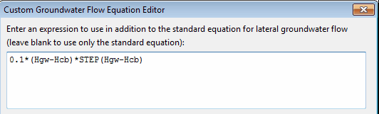
For lateral groundwater flow the result of evaluating the custom equation will be added onto the result of the standard equation. To replace the standard equation completely set all of its coefficients to 0. Remember that groundwater flow units are cfs/acre for US units and cms/ha for metric units.
The following symbols can be used in the equation:
| Hgw | (height of the groundwater table) |
| Hsw | (height of the surface water) |
| Hcb | (height of the channel bottom) |
| Hgs | (height of the ground surface) |
| Phi | (porosity of the subsurface soil) |
| Theta | (moisture content of the upper unsaturated zone) |
| Ks | (saturated hydraulic conductivity in inches/hr or mm/hr) |
| K | (hydraulic conductivity at the current moisture content in inches/hr or mm/hr) |
| Fi | (infiltration rate from the ground surface in inches/hr or mm/hr) |
| Fu | (percolation rate from the upper unsaturated zone in inches/hr or mm/hr) |
| A | (subcatchment area in acres or hectares) |
where all heights are relative to the aquifer's bottom elevation in feet (or meters).
The STEP function can be used to have flow only when the groundwater level is above a certain threshold. For example, the expression:
\[0.001 _ (Hgw - 5) _ STEP(Hgw - 5)\]
would generate flow only when Hgw was above 5. See the Treatment Editor topic for a list of additional math functions that can be used in a groundwater flow expression.
Group Edit Dialog
The Group Edit dialog is used to modify a property for a selected group of objects (see Selecting a Group of Objects). To use the dialog box:
- Select a class of object (Subcatchments, Infiltration, Junctions, Storage Units, or Conduits) to edit.
- Check the "with Tag equal to" box if you want to add a filter that will limit the objects selected for editing to those with a specific Tag value. (For Infiltration, the Tag will be that of the subcatchment to which the infiltration parameters belong.)
- Enter a Tag value to filter on if you have selected that option.
- Select the property to edit.
- Select whether to replace, multiply, or add to the existing value of the property. Note that for some non-numerical properties the only available choice is to replace the value.
- In the lower-right edit box, enter the value that should replace, multiply, or be added to the existing value for all selected objects. Some properties will have an ellipsis button displayed in the edit box which should be clicked to bring up a specialized editor for the property.
- Click OK to execute the group edit.
After the group edit is executed a confirmation dialog box will appear informing you of how many items were modified. It will ask if you wish to continue editing or not. Select Yes to return to the Group Edit dialog box to edit another parameter or No to dismiss the Group Edit dialog.
Infiltration Editor
The Infiltration Editor dialog is used to specify the method and its parameters that model the rate at which rainfall infiltrates into the upper soil zone of a subcatchment's pervious area. It is invoked when editing the Infiltration property of a Subcatchment. The infiltration parameters depend on which infiltration model is selected for the subcatchment: Horton and Modified Horton, Green-Ampt and Modified Green-Ampt, or Curve Number. The infiltration model is normally the default one set by project's Simulation Options or its Default Properties. The dialog allows one to override the default method for the subcatchment being edited.
- Horton Infiltration Parameters
- Green-Ampt Infiltration Parameters
- Curve Number Infiltration Parameters
Horton Infiltration Parameters
| Parameter | Description |
|---|---|
| Max. Infil. Rate | Maximum infiltration rate on the Horton curve (in/hr or mm/hr) (see table below) |
| Min. Infil. Rate | Minimum infiltration rate on the Horton curve (in/hr or mm/hr). Equivalent to the saturated hydraulic conductivity. See the Soil Characteristics Table for typical values. |
| Decay Const. | Infiltration rate decay constant for the Horton curve (1/hours). Typical values range between 2 and 7. |
| Drying Time | Time in days for a fully saturated soil to dry completely. Typical values range from 2 to 14 days. |
| Max. Infil. Vol. | Maximum infiltration volume possible (inches or mm, 0 if not applicable). It can be estimated as the difference between a soil's porosity and its wilting point times the depth of the infiltration zone. |
Representative Values for Max. Infiltration Rate
A. DRY soils (with little or no vegetation):
- Sandy soils: 5 in/hr
- Loam soils: 3 in/hr
- Clay soils: 1 in/hr
B. DRY soils (with dense vegetation):
- Multiply values given in A. by 2
C. MOIST soils
- Soils which have drained but not dried out (i.e., field capacity):
- divide values from A and B by 3.
- Soils close to saturation:
- choose value close to min. infiltration rate.
- Soils which have partially dried out:
- divide values from A and B by 1.5 - 2.5.
Green-Ampt Infiltration Parameters
| Parameter | Description |
|---|---|
| Suction Head | Average value of soil capillary suction along the wetting front (inches or mm) |
| Conductivity | Soil saturated hydraulic conductivity (in/hr or mm/hr) |
| Initial Deficit | Fraction of soil volume that is initially dry (i.e., difference between soil porosity and initial moisture content) |
The initial deficit for a completely drained soil is the difference between the soil's porosity and its field capacity. Typical values for all of these parameters can be found in the Soil Characteristics Table.
Curve Number Infiltration Parameters
Curve Number
This is the SCS curve number which is tabulated in the publication SCS Urban Hydrology for Small Watersheds, 2nd Ed., (TR-55), June 1986. Consult the Curve Number Table for a listing of values by soil group, and the accompanying Soil Group Table for the definitions of the various groups. Adjustments will be needed when a subcatchment contains separate pervious and impervious fractions and a Curve Number is selected from a table where the two land uses are lumped together.
Conductivity
This property has been deprecated and is no longer used.
Drying Time
The number of days it takes a fully saturated soil to dry. Typical values range between 2 and 14 days.
Inflows Editor
The Inflows Editor dialog is used to assign Direct, Dry Weather, and RDII inflow into a node of the drainage system. It is invoked whenever the Inflows property of a Node object is selected in the Property Editor. The dialog consists of three tabbed pages that provide a special editor for each type of inflow:
Direct Inflow Page
The Direct page on the Inflows Editor dialog is used to specify the time history of direct external flow and water quality entering a node of the drainage system. These inflows are represented by both a constant and time varying component as follows:
Inflow at time t = (baseline value) * (baseline pattern factor) +
(scale factor) * (time series value at time t)
The page contains the following input fields that define the properties of this relation:
Constituent
Selects the constituent (FLOW or one of the project's named pollutants) whose direct inflow will be described.
Baseline
Specifies the value of the constant baseline component of the constituent's inflow. For FLOW, the units are the project's flow units. For pollutants, the units are the pollutant's concentration units if inflow is a concentration, or can be any mass flow units if the inflow is a mass flow (see Units Factor below). If left blank then no baseline inflow is assumed.
Baseline Pattern
An optional Time Pattern whose factors adjust the baseline inflow on either an hourly, daily, or monthly basis (depending on the type of time pattern specified). Clicking the button will bring up the Time Pattern Editor dialog for the selected time pattern. If left blank, then no adjustment is made to the baseline inflow.
Time Series
The name of the time series that describes the time varying component of the constituent's inflow. If left blank then no time varying inflow is assumed. Clicking the button will bring up the Time Series Editor dialog for the selected time series. The units of the time series values obey the same convention as described above for Baseline inflow.
Scale Factor
A multiplier used to adjust the values of the constituent's inflow time series. The baseline value is not adjusted by this factor. The scale factor can have several uses, such as allowing one to easily change the magnitude of an inflow hydrograph while keeping its shape the same, without having to re-edit the entries in the hydrograph's time series. Or it can allow a group of nodes sharing the same time series to have their inflows behave in a time-synchronized fashion while letting their individual magnitudes be different. If left blank the scale factor defaults to 1.0.
Inflow Type
For pollutants, this field selects the type of inflow data as being either a CONCENTRATION (mass/volume) or a MASS FLOW RATE (mass/time). This field does not appear for FLOW inflow.
Units Factor
A numerical factor used to convert the units of pollutant mass flow rate in the time series data into concentration mass units per second. For example, if the inflow data were in lbs/day and the pollutant concentration was chosen as mg/L, then the conversion factor value would be (453,590 mg/lb) / (86,400 sec/day) = 5.25 (mg/sec) per (lb/day). This field does not appear for FLOW inflow, and for concentration-type inflows any value entered will be overridden to 1.0.
More than one constituent can be edited while the dialog is active by simply selecting another choice for the Constituent property. However, if the Cancel button is clicked then any changes made to all constituents will be ignored.
[!tip] If a pollutant is assigned a direct inflow in terms of concentration, then one must also assign a time series inflow to flow, otherwise no pollutant inflow will occur. An exception is at submerged outfalls where pollutant intrusion can occur during periods of reverse flow. If pollutant inflow is defined in terms of mass, then a corresponding flow inflow is not required.
Dry Weather Inflow Page
The Dry Weather page of the Inflows Editor dialog is used to specify a continuous source of dry weather flow entering a node of the drainage system. The page contains the following input fields:
Constituent
Selects the constituent (FLOW or one of the project's specified pollutants) whose dry weather inflow will be specified.
Average Value
Specifies the average (or baseline) value of the dry weather inflow of the constituent in the relevant units (flow units for flow, concentration units for pollutants). Leave blank if there is no dry weather flow for the selected constituent.
Time Patterns
Specifies the names of the time patterns to be used to allow the dry weather flow to vary in a periodic fashion by month of the year, by day of the week, and by time of day (for both week days and week ends). One can either type in a name or select a previously defined pattern from the dropdown list of each combo box. Up to four different types of patterns can be assigned. You can click the button next to each Time Pattern field to edit the respective pattern.
More than one constituent can be edited while the dialog is active by simply selecting another choice for the Constituent property. However, if the Cancel button is clicked then any changes made to all constituents will be ignored.
RDII Inflow Page
The RDII Inflow page of the Inflows Editor dialog form is used to specify RDII (Rainfall Dependent Infiltration/Inflow) for the node in question. The page contains the following two input fields:
Unit Hydrograph Group
Enter (or select from the dropdown list) the name of the Unit Hydrograph group that applies to the node in question. The unit hydrographs in the group are used in combination with the group's assigned rain gage to develop a time series of RDII inflows per unit area over the period of the simulation. Leave this field blank to indicate that the node receives no RDII inflow. Clicking the button will launch the Unit Hydrograph Editor for the UH group specified.
Sewershed Area
Enter the area (in acres or hectares) of the sewershed which contributes RDII to the node in question. Note this area will typically be only a small, localized portion of the subcatchment area that contributes surface runoff to the node.
Initial Buildup Editor
The Initial Buildup editor is invoked from the Property Editor when editing the Initial Buildup property of a Subcatchment. It specifies the amount of pollutant buildup existing over the subcatchment at the start of the simulation.
The editor consists of a data entry grid with two columns. The first column lists the name of each pollutant in the project and the second column contains edit boxes for entering the initial buildup values. If no buildup value is supplied for a pollutant, it is assumed to be 0. The units for buildup are either pounds per acre when US units are in use or kilograms per hectare when SI metric units are in use.
If a non-zero value is supplied for the initial buildup of a pollutant, it will override any initial buildup computed from the Antecedent Dry Days parameter specified on the Dates page of the Simulation Options dialog.
Inlet Structure Editor
The Inlet Structure Editor is invoked when a new Inlet object is created or is selected for editing from the Project Browser. As shown below it contains an Inlet Name field used to uniquely identify the inlet structure and an Inlet Type field to select the type of structure.
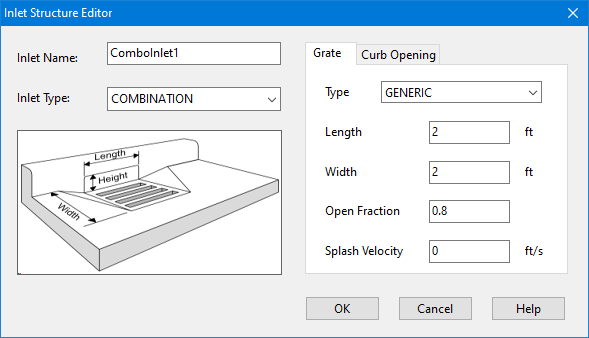
The design parameters shown in the data entry panel depend on the choice of inlet type:
- Grated Inlet
- Curb Opening Inlet
- Combination (Grated + Curb Opening) Inlet
- Slotted Drain Inlet
- Drop Grate Inlet (see Grated Inlet)
- Drop Curb Inlet (see Curb Opening Inlet)
- Custom Inlet
Grated Inlet
The design parameters for a grated inlet include:
Grate Type
One of the following types of grate designs:
| P_BAR-50 |
| Parallel bar grate with bar spacing 1-7/8-in on center |
| P_BAR-50X100 |
| Parallel bar grate with bar spacing 1-7/8-in on center and 3/8-in diameter lateral rods spaced at 4-in on center |
| P_BAR-30 |
| Parallel bar grate with 1-1/8-in on center bar spacing |
| CURVED_VANE | 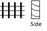 | Curved vane grate with 3-1/4-in longitudinal bar and 4-1/4-in transverse bar spacing on center |
| TILT_BAR-45 |
| 45 degree tilt bar grate with 2-1/4-in longitudinal bar and 4-in transverse bar spacing on center |
| TILT_BAR-30 |
| 30 degree tilt bar grate with 3-1/4-in and 4-in on center longitudinal and lateral bar spacing respectively |
| RETICULINE | 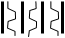 | "Honeycomb" pattern of lateral bars and longitudinal bearing bars |
| GENERIC | A generic grate design. |


Length
The grate's length parallel to the street curb (feet or meters).
Width
The grate's width (feet or meters).
Open Fraction (for GENERIC grates only)
The fraction of the grate's area that is open. Values are predetermined for non-Generic grates.
Splash Velocity (for GENERIC grates only)
The minimum velocity that causes some water to shoot over the inlet thus reducing its capture efficiency (ft/sec or m/sec). Values are predetermined for non-Generic grates.
Curb Opening Inlet
The design parameters for a curb opening inlet are:
Length
The length of the opening (feet or meters).
Height
The height of the opening (feet or meters).
Throat Angle
The orientation of the curb opening's throat relative to the street surface. Choices are:
| VERTICAL | Vertical Throat |
| HORIZONTAL | Horizontal Throat |
| INCLINED | Inclined Throat |
{kind=link}
{kind=link}
{kind=link}
[!tip] For combination inlets only the portion of the curb opening that extends beyond the length of the grated inlet contributes to inlet capture efficiency.
Slotted Drain Inlet
The design parameters for a slotted drain inlet are:
Length
The drain's length parallel to the street curb (feet or meters).
Width
The drain's width (feet or meters).
Custom Inlet
The only design parameter for a Custom inlet is the name of a user-defined flow capture curve. Two options for this curve are available:
- a Diversion Curve (normally used for Divider nodes) that has captured flow be a function of the inlet's approach flow
- a Rating Curve (normally used for Outlet links) that makes the captured flow be a function of water depth.
Diversion curves are best suited for on-grade inlets and Rating curves for on-sag inlets.
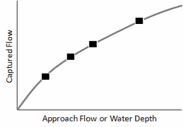
Clicking the button next to the curve's name field to open up the Curve Editor dialog.
Inlet Usage Editor
The Inlet Usage Editor is used to place an Inlet Structure into a Street or channel conduit. It is accessed by selecting a conduit into the Property Editor and then clicking the ellipsis button in its Inlets property. The following information is requested by the editor:
Inlet Structure
The name of the inlet structure to use. Select a previously defined structure from the drop-down list. The list will contain only those inlets that are compatible with the conduit's cross section (i.e., curb and gutter inlets for street sections or drop inlets for trapezoidal or rectangular channel sections). Selecting the blank first item will remove the inlet from the conduit.
Capture Node
The name of the node that receives flow captured by the inlet. You can select the node by clicking it on the Study Area Map or by selecting it from the Project Browser.
Number of Inlets
The number of identical inlets placed in the conduit. For two-sided street conduits this number refers to pairs of inlets placed on each side of the street. For example if 2 inlets are specified for a two-sided street, then a total of 4 inlets will be utilized, two on each side of the street.
Percent Clogged
The percentage to which each inlet is clogged. Suppose a value of 50% was used. Then the normal flow capture computed for the inlet would be reduced by half.
Flow Restriction
The maximum flow (in the project's flow units) that can be captured by a single inlet. A value of 0 indicates that flow capture is unrestricted.
Depression Height
The height of any local gutter depression that exists over the length of the inlet (in feet or meters). This local depression will be added onto any continuous depression that the conduit's Street section might have. A value of 0 indicates no local depression. This parameter is ignored for drop inlets.
Depression Width
The width of any local gutter depression in feet or meters. It should be at least as large as the width that the inlet extends out into the gutter. This value is ignored if the depression height is 0 or if a drop inlet is used.
Inlet Placement
Specifies whether the inlet is placed in an on-grade or on-sag location. Selecting AUTOMATIC has the program determine the placement based on the topography of the street layout.
[!tip] Grated, curb opening and slotted drain inlets can only be used by Street conduits. Drop grates and drop curb inlets can only be used by rectangular or trapezoidal channels. Custom inlets can be used in any conduit.
Interface File Combine Dialog
The Interface File Combine dialog is launched by selecting File >> Combine from the Main Menu. It is used to combine two Routing Interface files into a single third file. The dialog contains a data entry grid with the following fields:
Interface File 1
Enter the name of the first interface file to be combined.
Interface File 2
Enter the name of the second interface file to be combined.
Interface File 3
Enter the name of the combined interface file to be written.
Description
Enter a descriptive line of text that will be written to the header of the combined file (optional).
Instead of typing in file names you can click the Browse button to select file names from a standard Windows File Open/Save dialog.
Interface File Selection Dialog
The Interface File Selection dialog appears when adding or editing an interface file to the project using the Interface Files page of the Simulation Options dialog.
File Type
Select the type of interface file to be specified.
Use / Save Buttons
Select whether the named interface file will be used to supply input to a simulation run or whether simulation results will be saved to it.
File Name
Enter the name of the interface file.
Browse Button
Click this button to launch a standard file selection dialog from which the path and name of the interface file can be selected.
Land Use Assignment Editor
The Land Use Assignment editor is invoked from the Property Editor when editing the Land Uses property of a Subcatchment. Its purpose is to assign land uses to the subcatchment for water quality simulations. The percent of land area in the subcatchment covered by each land use is entered next to its respective land use category. If the land use is not present its field can be left blank. The percentages entered do not necessarily have to add up to 100.
Land Use Editor
The Land Use Editor dialog is used to define a category of land use for the study area and to define its pollutant buildup and washoff characteristics. The dialog contains three tabbed pages of land use properties:
- General Page (provides land use name and street sweeping parameters)
- Buildup Page (defines rate at which pollutant buildup occurs)
- Washoff Page (defines rate at which pollutant washoff occurs)
Land Use Editor - General Page
The General page of the Land Use Editor dialog describes the following properties of a particular land use category:
Land Use Name
The name assigned to the land use.
Description
An optional comment or description of the land use. (Click the ellipsis button or press Enter to edit).
Street Sweeping Interval
Days between street sweeping within the land use (0 for no sweeping).
Street Sweeping Availability
Fraction of the buildup of all pollutants that is available for removal by sweeping.
Last Swept
Number of days since last swept at the start of the simulation.
If Street Sweeping does not apply to the land use, then the last three properties can be left blank
Land Use Editor - Buildup Page
The Buildup page of the Land Use Editor dialog describes the properties associated with pollutant buildup over the land during dry weather periods. These consist of:
Pollutant
Select the pollutant whose buildup properties are being edited.
Function
The type of buildup function to use for the pollutant. The choices are NONE for no buildup, POW for power function buildup, EXP for exponential function buildup, SAT for saturation function buildup, and EXT for buildup supplied by an external time series. See the Pollutant Buildup topic for explanations of these different functions. Select NONE if no buildup occurs.
Max. Buildup
The maximum buildup that can occur, expressed as lbs (or kg) of the pollutant per unit of the normalizer variable (see below). This is the same as the C1 coefficient used in the buildup formulas discussed under Pollutant Buildup.
The following two properties apply to the POW, EXP, and SAT buildup functions:
Rate Constant
The time constant that governs the rate of pollutant buildup. This is the C2 coefficient in the Power and Exponential buildup formulas discussed under Pollutant Buildup. For Power buildup its units are mass / days raised to a power, while for Exponential buildup its units are 1/days.
Power/Sat. Constant
The exponent C3 used in the Power buildup formula, or the half-saturation constant C2 used in the Saturation buildup formula discussed under Pollutant Buildup. For the latter case, its units are days.
The following two properties apply to the EXT (External Time Series) option:
Scaling Factor
A multiplier used to adjust the buildup rates listed in the time series.
Time Series
The name of the Time Series that contains buildup rates (as mass per normalizer per day).
Normalizer
The variable to which buildup is normalized on a per unit basis. The choices are either land area (in acres or hectares) or curb length. Any units of measure can be used for curb length, as long as they remain the same for all subcatchments in the project.
When there are multiple pollutants, the user must select each pollutant separately from the Pollutant dropdown list and specify its pertinent buildup properties.
Land Use Editor - Washoff Page
The Washoff page of the Land Use Editor dialog describes the properties associated with pollutant washoff over the land use during wet weather events. These consist of:
Pollutant
The name of the pollutant whose washoff properties are being edited.
Function
The choice of washoff function to use for the pollutant. The choices are:
| NONE | no washoff |
| EXP | exponential washoff |
| RC | rating curve washoff |
| EMC | event-mean concentration washoff |
The formula for each of these functions is discussed under the Pollutant Washoff topic.
Coefficient
This is the value of C1 in the exponential and rating curve formulas, or the event-mean concentration.
Exponent
The exponent used in the exponential and rating curve washoff formulas.
Cleaning Efficiency
The street cleaning removal efficiency (percent) for the pollutant. It represents the fraction of the amount that is available for removal on the land use as a whole (set on the General page of the editor) which is actually removed.
BMP Efficiency
Removal efficiency (percent) associated with any Best Management Practice that might have been implemented. The washoff load computed at each time step is simply reduced by this amount.
As with the Buildup page, each pollutant must be selected in turn from the Pollutant dropdown list and have its pertinent washoff properties defined.
Legend Editor
The Legend Editor (pictured below) is used to set numerical ranges to which different colors are assigned for viewing a particular parameter on the Study Area Map.
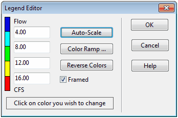
- Numerical values, in increasing order, are entered in the edit boxes to define the ranges. Not all four boxes need to have values.
- To change a color, click on its color band in the Editor and then select a new color from the Color Dialog box that will appear.
- Click the Auto-Scale button to automatically assign ranges based on the minimum and maximum values attained by the parameter in question at the current time period.
- The Color Ramp button is used to select from a list of built-in color schemes.
- The Reverse Colors button reverses the ordering of the current set of colors (the color in the lowest range becomes that of the highest range and so on).
- Check Framed if you want a frame drawn around the legend.
Changes made to a legend are saved with the project's settings and remain in effect when the project is re-opened in a subsequent session.
LID Editors
LID Controls are defined and assigned to subcatchments through a series of three different editor forms:
- The LID Control Editor is used to define re-usable LID controls, designed on a per-unit-area basis, that can be placed throughout a study area's subcatchments. It is invoked by adding a new LID Control object or editing an existing one from the main form's Project Browser.
- The LID Group Editor is used to add any number of LID controls to a specific subcatchment. It is invoked by selecting the subcatchment's LID Controls property from the subcatchment's Property Editor.
- The LID Usage Editor is used to describe how each LID control added to an LID group is deployed within the group's subcatchment. It is invoked from the LID Group Editor to specify the areal extent of the control and the portion of the subcatchment's runoff that it treats.
LID Control Editor
The LID Control Editor is used to define a low impact development control that can be deployed throughout a study area to store, infiltrate, and evaporate subcatchment runoff. The design of the control is made on a per-unit-area basis so that it can be placed in any number of subcatchments at different sizes or number of replicates.
The editor contains the following data entry fields:
Control Name
A name used to identify the particular LID control.
LID Type
The generic type of LID being defined (bio-retention cell, rain garden, green roof, infiltration trench, permeable pavement, rain barrel, or vegetative swale).
Process Layers
These are a tabbed set of pages containing data entry fields for the vertical layers and drain system that comprise an LID control. They include some combination of the following, depending on the type of LID selected:
LID Surface Layer
The Surface Layer page of the LID Control Editor is used to describe the surface properties of all types of LID controls except rain barrels. Surface layer properties include:
Berm Height (or Storage Depth)
When confining walls or berms are present this is the maximum depth to which water can pond above the surface of the unit before overflow occurs (in inches or mm). For Rooftop Disconnection it is the roof
Vegetation Volume Fraction
The fraction of the volume within the surface storage depth filled with vegetation. This is the volume occupied by stems and leaves, not their surface area coverage. Normally this volume can be ignored, but may be as high as 0.1 to 0.2 for very dense vegetative growth.
Surface Roughness
Manning's roughness coefficient (n) for overland flow over surface soil cover, pavement, roof surface or a vegetative swale (see this table for suggested values). Use 0 for other types of LIDs.
Surface Slope
Slope of a roof surface, pavement surface or vegetative swale (percent). Use 0 for other types of LIDs.
Swale Side Slope
Slope (run over rise) of the side walls of a vegetative swale's cross section. This value is ignored for other types of LIDs.
[!tip] If either the Surface Roughness or Surface Slope values are 0 then any ponded water that exceeds the surface storage depth is assumed to completely overflow the LID control within a single time step.
LID Pavement Layer
The Pavement Layer page of the LID Control Editor supplies values for the following properties of a permeable pavement LID:
Thickness
The thickness of the pavement layer (inches or mm). Typical values are 4 to 6 inches (100 to 150 mm).
Void Ratio
The volume of void space relative to the volume of solids in the pavement for continuous systems or for the fill material used in modular systems. Typical values for pavements are 0.12 to 0.21. Note that porosity = void ratio / (1 + void ratio).
Impervious Surface Fraction
Ratio of impervious paver material to total area for modular systems; 0 for continuous porous pavement systems.
Permeability
Permeability of the concrete or asphalt used in continuous systems or hydraulic conductivity of the fill material (gravel or sand) used in modular systems (in/hr or mm/hr). In the latter case the fill's nominal conductivity should be multiplied by the fraction of the total area it covers. The permeability of new porous concrete or asphalt is very high (e.g., hundreds of in/hr) but can drop off over time due to clogging by fine particulates in the runoff (see below).
Clogging Factor
Number of pavement layer void volumes of runoff treated it takes to completely clog the pavement. Use a value of 0 to ignore clogging. Clogging progressively reduces the pavement's permeability in direct proportion to the cumulative volume of runoff treated.
If one has an estimate of the number of years Yclog it takes to fractionally clog the system to a degree Fclog, then the Clogging Factor (CF) can be computed as:
\[CF = Y_{clog} \, Pa (1 + CR) (1 + VR) / (VR (1 - ISF) T \, F_{clog})\]
where Pa is the annual rainfall amount over the site, CR is the pavement's capture ratio (area that contributes runoff to the pavement divided by area of the pavement itself), VR is the system's Void Ratio, ISF is the Impervious Surface Fraction, and T is the pavement layer Thickness.
As an example, suppose it takes 5 years to completely clog a continuous porous pavement system that serves an area where the annual rainfall is 36 inches/year. If the pavement is 6 inches thick, has a void ratio of 0.2 and captures runoff only from its own surface (so that CR = 0), then the Clogging Factor is 5 x 36 x 1 x (1 + 0.2) / 0.2 / 1 / 6 / 1 = 180.
Regeneration Interval
The number of days that the pavement layer is allowed to clog before its permeability is restored, typically by vacuuming its surface. A value of (the default) indicates that no permeability regeneration occurs.
Regeneration Fraction
The fractional degree to which the pavement's permeability is restored when a regeneration interval is reached. The default is 0 (no restoration) while a value of 1 indicates complete restoration to the original permeability value. Once a regeneration occurs the pavement begins to clog once again at a rate determined by the Clogging Factor.
LID Soil Layer
The Soil Layer page of the LID Control Editor describes the properties of the engineered soil mixture used in bio-retention types of LIDs and the optional sand layer beneath permeable pavement. These properties are:
Thickness
The thickness of the soil layer (inches or mm). Typical values range from 18 to 36 inches (450 to 900 mm) for rain gardens, street planters and other types of land-based bio-retention units, but only 3 to 6 inches (75 to 150 mm) for green roofs.
Porosity
The volume of pore space relative to total volume of soil (as a fraction).
Field Capacity
Volume of pore water relative to total volume after the soil has been allowed to drain fully (as a fraction). Below this level, vertical drainage of water through the soil layer does not occur.
Wilting Point
Volume of pore water relative to total volume for a well dried soil where only bound water remains (as a fraction). The moisture content of the soil cannot fall below this limit.
Conductivity
Hydraulic conductivity for the fully saturated soil (in/hr or mm/hr).
Conductivity Slope
Average slope of the curve of log(conductivity) versus soil moisture deficit (porosity minus moisture content (unitless). Typical values range from 30 to 60. It can be estimated from a standard soil grain size analysis as 0.48×(Sand) + 0.85×(Clay).
Suction Head
The average value of soil capillary suction along the wetting front (inches or mm). This is the same parameter as used in the Green-Ampt infiltration model.
[!tip] Porosity, field capacity, conductivity and conductivity slope are the same soil properties used for Aquifer objects when modeling groundwater, while suction head is the same parameter used for Green-Ampt infiltration. Except here they apply to the special soil mix used in a LID unit rather than the site's naturally occurring soil. See the Soil Characteristics Table for typical values of these properties.
LID Storage Layer
The Storage Layer page of the LID Control Editor describes the properties of the crushed stone or gravel layer used in bio-retention cells, permeable pavement systems, and infiltration trenches as a bottom storage/drainage layer. It is also used to specify the height of a rain barrel (or cistern). The following data fields are displayed:
Thickness (or Barrel Height)
This is the thickness of a gravel layer or the height of a rain barrel (inches or mm). Crushed stone and gravel layers are typically 6 to 18 inches (150 to 450 mm) thick while single family home rain barrels range in height from 24 to 36 inches (600 to 900 mm).
The following data fields do not apply to Rain Barrels.
Void Ratio
The volume of void space relative to the volume of solids in the layer. Typical values range from 0.5 to 0.75 for gravel beds. Note that porosity = void ratio / (1 + void ratio).
Seepage Rate
The rate at which water seeps into the native soil below the layer (in inches/hour or mm/hour).This would typically be the Saturated Hydraulic Conductivity of the surrounding subcatchment if Green-Ampt infiltration is used or the Minimum Infiltration Rate for Horton infiltration. If there is an impermeable floor or liner below the layer then use a value of 0.
Clogging Factor
Total volume of treated runoff it takes to completely clog the bottom of the layer divided by the void volume of the layer. Use a value of 0 to ignore clogging. Clogging progressively reduces the Infiltration Rate in direct proportion to the cumulative volume of runoff treated and may only be of concern for infiltration trenches with permeable bottoms and no underdrains. Refer to the Pavement Layer page for more discussion of the Clogging Factor.
The following data field applies only to Rain Barrels.
Covered
Specifies if the rain barrel is covered or not.
LID Drain System
LID storage layers can contain an optional drainage system that collects water entering the layer and conveys it to a conventional storm drain or other location (which can be different than the outlet of the LID's subcatchment). Drain flow can also be returned it to the pervious area of the LID's subcatchment. The drain can be offset some distance above the bottom of the storage layer, to allow some volume of runoff to be stored (and eventually infiltrated) before any excess is captured by the drain. For Rooftop Disconnection, the drain system consists of the roof's gutters and downspouts that have some maximum conveyance capacity.
The Drain page of the LID Control Editor describes the properties of and LID unit's drain system. It contains the following data entry fields:
Drain Coefficient and Drain Exponent
The drain coefficient C and exponent n determines the rate of flow through a drain as a function of the height of stored water above the drain's offset. The following equation is used to compute this flow rate (per unit area of the LID unit):
\[q = C \, h^{n}\]
where q is outflow (in/hr or mm/hr) and h is the height of saturated media above the drain (inches or mm). If the layer has no drain then set C to 0.
A typical value for n would be 0.5 (making the drain act like an orifice). Note that the units of C depends on the unit system being used as well as the value assigned to n. Click here for more advice on setting drain parameters.
Drain Offset Height
This is the height of the drain line above the bottom of a storage layer or rain barrel (inches or mm).
Drain Delay (for Rain Barrels only)
The number of dry weather hours that must elapse before the drain line in a rain barrel is opened (the line is assumed to be closed once rainfall begins). A value of 0 signifies that the barrel's drain line is always open and drains continuously. This parameter is ignored for other types of LID practices.
Flow Capacity (for Rooftop Disconnection only)
This is the maximum flow rate that the roof's gutters and downspouts can handle (in inches/hour or mm/hour) before overflowing. This is the only drain parameter used for Rooftop Disconnection.
Open Level
The height (in inches or mm) in the drain's Storage Layer that causes the drain to automatically open when the water level rises above it. The default is 0 which means that this feature is disabled.
Closed Level
The height (in inches or mm) in the drain's Storage Layer that causes the drain to automatically close when the water level falls below it. The default is 0.
Control Curve
The name of an optional Control Curve that adjusts the computed drain flow as a function of the head of water above the drain. Leave blank if not applicable.
Drain Advisor
An LID unit's drain system is performance-based rather than design-based. The user specifies its height above the bottom of the unit's storage layer as well as how its volumetric flow rate (per unit area) varies with the height of saturated media above it. There are several things to keep in mind when specifying the parameters of an LID drain:
- If the storage layer that contains the drain has an impermeable bottom then it's best to place the drain at the bottom with a zero offset. Otherwise, to allow the full storage volume to fill before draining occurs, one would place the drain at the top of the storage layer.
- If the storage layer has no drain then set the drain coefficient to 0.
- If the drain can carry whatever flow enters the storage layer up to some specific limit then set the drain coefficient to the limit and the drain exponent to 0.
- If the drain consists of slotted pipes where the slots act as orifices, then the drain exponent would be 0.5 and the drain coefficient would be 60,000 times the ratio of total slot area to LID area. For example, drain pipe with five 1/4 in. diameter holes per foot spaced 50 feet apart would have an area ratio of 0.000035 and a drain coefficient of 2.
- If the goal is to drain a fully saturated unit in a specific amount of time then set the drain exponent to 0.5 (to represent orifice flow) and the drain coefficient to 2D1/2/T where D is the distance from the drain to the surface plus any berm height (in inches or mm) and T is the time in hours to drain. For example, to drain a depth of 36 inches in 12 hours requires a drain coefficient of 1. If this drain consisted of the slotted pipes described in the previous bullet, whose coefficient was 2, then a flow regulator, such as a cap orifice, would have to be placed on the drain outlet to achieve the reduced flow rate.
LID Drainage Mat
Green Roofs usually contain a drainage mat or plate that lies below the soil media and above the roof structure. Its purpose is to convey any water that drains through the soil layer off of the roof. The Drainage Mat page of the LID Control Editor for Green Roofs lists the properties of this layer which include:
Thickness
The thickness of the mat or plate (inches or mm). It typically ranges between 1 to 2 inches.
Void Fraction
The ratio of void volume to total volume in the mat. It typically ranges from 0.5 to 0.6.
Roughness
This is the Manning's roughness coefficient (n) used to compute the horizontal flow rate of drained water through the mat. It is not a standard product specification provided by manufacturers and therefore must be estimated. Previous modeling studies have suggested using a relatively high value such as from 0.1 to 0.4.
LID Pollutant Removal
The Pollutant Removal page of the LID Control Editor allows one to specify the degree to which pollutants are removed by an LID control as seen by the flow leaving the unit through its underdrain system. Thus it only applies to LID practices that contain an underdrain (bio-retention cells,permeable pavement, infiltration trenches, and rain barrels).
The page contains a data entry grid with the project's pollutant names listed in one column and the percent removal that each receives by the LID unit in the second editable column. If a percent removal value is left blank it is assumed to be 0.
The removals specified on this page are applied to the unit's underdrain when it sends flow onto either a subcatchment or into a conveyance system node. They do not apply to any surface flow that leaves the LID unit. As an example, if the runoff treated by the LID unit had a TSS concentration of 100 mg/L and a removal percentage of 90, then if 5 cfs flowed from its drain into a conveyance system node the mass loading contribution to the node would be 100 x (100 - 90) x 5 x 28.3 L/ft3 = 1,415 mg/sec. If in addition the unit had a surface outflow of 1 cfs into the same node, the mass loading from this flow stream would be 100 x 1 x 28.3 = 2,830 mg/sec.
LID Group Editor
The LID Group Editor is invoked when the LID Controls property of a [Subcatchment]() is selected for editing. It is used to identify a group of previously defined LID controls that will be placed within the subcatchment, the sizing of each control, and what percent of runoff from the non-LID portion of the subcatchment each should treat.
The editor displays the current group of LIDs placed in the subcatchment along with buttons for adding an LID unit, editing a selected unit, and deleting a selected unit. These actions can also be chosen by hitting the **<Insert>** key, the **<Enter>** key, and the **<Delete>** key, respectively. Selecting Add or Edit will bring up an LID Usage Editor where one can enter values for the data fields shown in the Group Editor.
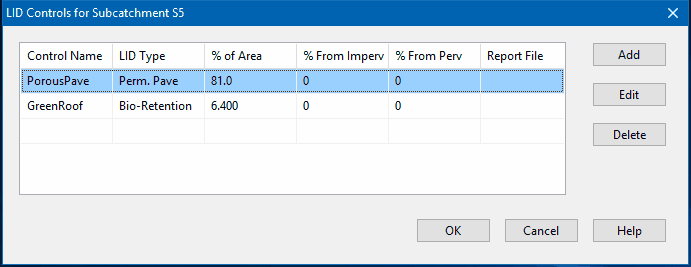
Note that the total % of Area for all of the the LID units within a subcatchment must not exceed 100%. The same applies to % From Imperv and % From Perv. Refer to the LID Usage Editor for the meaning of these parameters.
LID Usage Editor
The LID Usage Editor is invoked from a subcatchment's [LID Group Editor]() to specify how a particular LID control will be deployed within the subcatchment. It contains the following data entry fields:
Control Name
The name of a previously defined LID control to be used in the subcatchment.
LID Occupies Full Subcatchment
Select this checkbox option if the LID control occupies the full subcatchment (i.e., the LID is placed in its own separate subcatchment and accepts runoff from upstream subcatchments).
Area of Each Unit
The surface area devoted to each replicate LID unit (sq. ft or sq. m). If the LID Occupies Full Subcatchment box is checked, then this field becomes disabled and will display the total subcatchment area divided by the number of replicate units. (See [LID Placement]() for options on placing LIDs within subcatchments.) The label below this field indicates how much of the total subcatchment area is devoted to the particular LID being deployed and gets updated as changes are made to the number of units and area of each unit.
Number of Replicate Units
The number of equal size units of the LID practice (e.g., the number of rain barrels) deployed within the subcatchment.
Surface Width Per Unit
The width of the outflow face of each identical LID unit (in ft or m). This parameter applies to roofs, pavement, trenches, and swales that use overland flow to convey surface runoff off of the unit. It can be set to 0 for other LID processes, such as bio-retention cells, rain gardens, and rain barrels that simply spill any excess captured runoff over their berms.
% Initially Saturated
For bio-retention cells, rain gardens, and green roofs this is the degree to which the unit's soil is initially filled with water (0 % saturation corresponds to the wilting point moisture content, 100 % saturation has the moisture content equal to the porosity). For units with a storage layer it corresponds to the initial depth of water in the layer.
% of Impervious Area Treated
The percent of the impervious portion of the subcatchment's non-LID area whose runoff is treated by the LID practice. (E.g., if rain barrels are used to capture roof runoff and roofs represent 60% of the impervious area, then the impervious area treated is 60%). If the LID unit treats only direct rainfall, such as with a green roof or roof disconnection, then this value should be 0. If the LID takes up the entire subcatchment then this field is ignored.
% of Pervious Area Treated
The percent of the pervious portion of the subcatchment's non-LID area whose runoff is treated by the LID practice. If the LID unit treats only direct rainfall, such as with a green roof or roof disconnection, then this value should be 0. If the LID takes up the entire subcatchment then this field is ignored.
Send Drain Flow To
Provide the name of the Node or Subcatchment that receives any drain flow produced by the LID unit. This field can be left blank if this flow goes to the same outlet as the LID unit’s subcatchment.
Return All Outflow To Pervious Area
Select this option if outflow from the LID unit should be routed back onto the pervious area of the subcatchment that contains it. If drain outflow was selected to be routed to a different location than the subcatchment outlet then only surface outflow will be returned. Otherwise both surface and drain flow will be returned. Selecting this option would be a common choice to make for Rain Barrels, Rooftop Disconnection and possibly Green Roofs.
Detailed Report File
The name of an optional file where detailed time series results for the LID will be written. Click the browse button to select a file using the standard Windows File Save dialog or click the delete button to remove any detailed reporting. Consult the LID Results topic to learn more about the contents of this file.
[!tip] If the subcatchment containing the LID internally routes some portion of the impervious area runoff onto the pervious area then the percent of impervious area treated by the LID unit refers to the remaining impervious area that is not internally routed. For example, if the subcatchment has 2 acres of impervious area with runoff from 50% of this area routed onto its pervious area then an LID unit which treats 20% of the impervious area would receive runoff from 0.2 acres of impervious area. This same convention applies to the percent of pervious area treated when there is internal routing from pervious to impervious areas.
Map Dimensions Dialog
The Map Dimensions dialog is used to change the dimensions of the study area map.
Lower Left Coordinates
Enter the X,Y coordinates of the lower left corner of the map.
Upper Right Coordinates
Enter the X,Y coordinates of the upper right corner of the map.
Map Units
Select the units used to measure distances on the map. The choices are:
- Feet
- Meters
- Degrees
- None
Re-Compute Length and Areas
This check box only appears if the Auto-Length option is in effect. If selected, then the lengths of all conduits and the areas of all subcatchments will be re-computed based on the map's new dimensions.
Auto-Size Button
Click this button to automatically set the dimensions based on the coordinates of the objects currently included in the map.
Map Options Dialog
The Map Options dialog sets various display options for the Study Area Map. The dialog contains separate tabbed pages that control the appearance of the following items:
- Subcatchments (controls fill style, symbol size, and outline thickness of subcatchment areas)
- Nodes (controls size of nodes and making size be proportional to value)
- Links (controls thickness of links and making thickness be proportional to value)
- Labels (turns display of map labels on/off)
- Annotation (displays or hides node/link ID labels and parameter values)
- Symbols (turns display of storage unit, pump, and regulator symbols on/off)
- Flow Arrows (selects visibility and style of flow direction arrows)
- Background (changes the map's background color)
Map Options - Subcatchments
The Subcatchments page of the Map Options dialog box controls how subcatchment areas are displayed on the Study Area Map.
Fill Style
Selects style used to fill interior of subcatchment areas.
Symbol Size
Sets the size of the symbol placed at the centroid of subcatchments.
Outline Thickness
Sets the thickness of the line used to draw the subcatchment's boundary; set to zero if no boundary should be displayed.
Display Link to Outlet
If checked then a dashed line is drawn between the subcatchment centroid and the subcatchment's outlet node (or subcatchment).
Map Options - Nodes
The Nodes page of the Map Options dialog box controls how nodes are displayed on the Study Area Map.
Node Size
Selects node diameter in pixels.
Proportional to Value
Select if node size should increase as the viewed parameter increases in value.
Display Border
Select if a border should be drawn around each node (recommended for light-colored backgrounds).
Map Options - Links
The Links page of the Map Options dialog box controls how links are displayed on the Study Area Map.
Link Size
Sets thickness of links displayed on map.
Proportional to Value
Select if link thickness should increase as the viewed parameter increases in value.
Display Border
Check if a black border should be drawn around each link.
Map Options - Labels
The Labels page of the Map Options dialog box controls how user-created map labels are displayed on the Study Area Map.
Use Transparent Text
Check to display text with a transparent background (otherwise an opaque background is used).
At Zoom Of
Selects minimum zoom at which labels should be displayed; labels will be hidden at zooms smaller than this.
Map Options - Annotation
The Annotation page of the Map Options dialog form determines what kind of annotation is provided alongside of the objects on the Study Area Map.
ID Labels
| Rain | Gages check to display rain gage ID names |
| Subcatchments | check to display subcatchment ID names |
| Nodes | check to display node ID names |
| Links | check to display link ID names |
Values
| Subcatchments | check to display value of current subcatchment variable being viewed |
| Nodes | check to display value of current node variable being viewed |
| Links | check to display value of current link variable being viewed |
Use Transparent Text
Check to display text with a transparent background (otherwise an opaque background is used).
Font Size
Adjusts the size of the font used to display annotation.
At Zoom Of
Selects minimum zoom at which annotation should be displayed; all annotation will be hidden at zooms smaller than this.
Map Options - Symbols
The Symbols page of the Map Options dialog box determines if special symbols should be used to display objects on the Study Area Map.
Display Node Symbols
If checked then special node symbols will be used.
Display Link Symbols
If checked then special link symbols will be used.
At Zoom Of
Selects minimum zoom at which symbols should be displayed; symbols will be hidden at zooms smaller than this.
Map Options - Flow Arrows
The Flow Arrows page of the Map Options dialog controls how flow direction arrows are displayed on the Study Area Map.
Arrow Style
Selects style (shape) of arrow to display (select None to hide arrows).
Arrow Size
Sets arrow size.
At Zoom of
Selects minimum zoom at which arrows should be displayed; arrows will be hidden at smaller zooms.
[!tip] Flow direction arrows will only be displayed after a successful simulation has been made and a computed parameter has been selected for viewing. Otherwise the direction arrow will point from the user-designated start node to the end node.
Map Options - Background
The Background page of the Map Options dialog offers a selection of colors used to paint the map's background with.
Pollutant Editor
The Pollutant Editor is invoked whenever a new Pollutant object is created or an existing pollutant is selected for editing. It contains the following fields:
Name
The name assigned to the pollutant.
Units
The concentration units (mg/L, ug/L, or #/L (counts/L)) in which the pollutant concentration is expressed.
Rain Concentration
Concentration of the pollutant in rain water (concentration units).
GW Concentration
Concentration of the pollutant in ground water (concentration units).
Initial Concentration
Concentration of the pollutant throughout the conveyance system at the start of the simulation.
I&I Concentration
Concentration of the pollutant in any Infiltration/Inflow (concentration units).
DWF Concentration
Concentration of the pollutant in any dry weather sanitary flow (concentration units). This value can be overridden for any specific node of the conveyance system by editing the node's Inflows property.
Decay Coefficient
First-order decay coefficient of the pollutant (1/days).
Snow Only
YES if pollutant buildup occurs only when there is snow cover, NO otherwise (default is NO).
Co-Pollutant
Name of another pollutant whose runoff concentration contributes to the runoff concentration of the current pollutant.
Co-Fraction
Fraction of the co-pollutant's runoff concentration that contributes to the runoff concentration of the current pollutant.
An example of a co-pollutant relationship would be where the runoff concentration of a particular heavy metal is some fixed fraction of the runoff concentration of suspended solids. In this case suspended solids would be declared as the co-pollutant for the heavy metal.
Profile Plot Selection Dialog
The Profile Plot Selection dialog is used to specify a path of connected drainage system links along which a water depth profile versus distance should be drawn. To define a path using the dialog:
- Enter the ID of the upstream node of the first link in the path in the Start Node edit field (or click on the node on the Study Area Map and then on the
 button next to the edit field).
button next to the edit field). - Enter the ID of the downstream node of the last link in the path in the End Node edit field (or click the node on the map and then click the button next to the edit field).
- Click the Find Path button to have the program automatically identify the path with the smallest number of links between the start and end nodes. These will be listed in the Links in Profile box.
- You can insert a new link into the Links in Profile list by selecting the new link either on the Study Area Map or in the Project Browser and then clicking the button underneath the Links in Profile list box.
- Entries in the Links in Profile list can be deleted or rearranged by using the
 , , and buttons underneath the list box
, , and buttons underneath the list box - Click the OK button to view the profile plot.
To save the current set of links listed in the dialog for future use:
- Click the Save Current Profile button.
- Supply a name for the profile when prompted.
To use a previously saved profile:
- Click the Use Saved Profile button.
- Select the profile to use from the Profile Selection dialog that appears.
Profile Plot Options Dialog
The Profile Plot Options dialog is used to customize the appearance of a Profile Plot. The dialog contains five pages:
- Colors:
Selects the color to use for the plot window panel, the plot background, a conduit's interior, and the depth of filled water.
- Styles
Lets one choose:
- to use thick lines when drawing conduits and the ground profile
- to display the ground profile
- to display conduits only ( which provides a closer look at water levels within conduits by removing all other details form the plot).
- Axes
Edits the main and axis titles, including their fonts, and selects to display axis grid lines.
- Vertical Scale
Lets one choose the minimum, maximum, and increment values for the vertical axis scale, or have SWMM set the scale automatically. If the increment field contains 0 or is left blank the program will automatically select an increment to use.
- Node Labels
- Selects to display node ID labels either along the plot's top axis, directly on the plot above the node's crown height, or both.
- Selects the length of arrow to draw between the node label and the node's crown on the plot (use 0 for no arrows).
- Selects the font size of the node ID labels.
Check the Default box to have these options apply to all new profile plots when they are first created.
Project Defaults Dialog
The Project Defaults dialog is used to set default values for object properties and certain simulation options. The dialog has three tabbed pages covering the following categories:
Default ID Labels
The ID Labels page of the Project Defaults dialog form is used to determine how SWMM will assign default ID labels for the visual project components when they are first created. For each type of object you can enter a label prefix in the corresponding entry field or leave the field blank if an object's default name will simply be a number. In the last field you can enter an increment to be used when adding a numerical suffix to the default label. As an example, if C were used as a prefix for Conduits along with an increment of 5, then as conduits are created they receive default names of C5, C10, C15 and so on. An object's default name can be changed by using the Property Editor for visual objects or the object-specific editor for non-visual objects.
Default Node/Link Properties
The Nodes/Links page of the Project Defaults dialog sets default property values for newly created nodes and links. These properties include:
- Node Invert Elevation
- Node Maximum Depth
- Node Ponded Area
- Storage Surface Area
- Conduit Length
- Conduit Shape and Size
- Conduit Roughness
- Flow Units
- Link Offsets Convention
- Routing Method
- Force Main Equation
The defaults that are automatically assigned to individual objects can be changed by using the object's Property Editor. The choice of Flow Units and Link Offsets Convention can be changed directly on the main window's Status Bar.
[!tip] The choice of flow units determines whether US or metric units are used for all other quantities. Default values are not automatically adjusted when the unit system is changed from US to metric (or vice versa).
[!tip] Link Offsets can be specified as either depth above invert or as absolute elevation. When this convention is changed, a dialog will appear giving one the option to automatically re-calculate all existing link offsets in the current project using the newly selected convention.
Default Subcatchment Properties
The Subcatchment page of the Project Defaults dialog sets default property values for newly created subcatchments. These properties include:
- Subcatchment Area
- Characteristic Width
- Slope
- % Impervious
- Impervious Area Roughness
- Pervious Area Roughness
- Impervious Area Depression Storage
- Pervious Area Depression Storage
- % of Impervious Area with No Depression Storage
- Infiltration Method.
Explanations of these properties can be found in the Subcatchment Properties topic.
These default properties for a particular subcatchment can be modified later on by using the Property Editor.
[!tip] Changing the Infiltration Method and its default parameters for an existing project will affect all subcatchments that were assigned the previous Infiltration Method. See the description of Infiltration Model for the General Simulation Options dialog for details.
Reporting Options Dialog
The Reporting Options dialog is used to select individual subcatchments, nodes, and links that will have detailed time series results saved for viewing after a simulation has been run. The default for new projects is that all objects will have detailed results saved for them. It is also used to select what optional material appears in the Status Report and whether time series results consist of point value (the default) or values averaged over a reporting time step.
The dialog contains three tabbed pages - one each for subcatchments, nodes, and links. It is a stay-on-top form which means that you can select items directly from the Study Area Map or Project Browser while the dialog remains visible.
To include an object in the set that is reported on:
- Select the tab to which the object belongs (Subcatchments, Nodes or Links).
- Unselect the All check box if it is currently checked.
- Select the specific object either from the Study Area Map or from the listing in the Project Browser.
- Click the Add button on the dialog.
- Repeat the above steps for any additional objects.
To remove an item from the set selected for reporting:
- Select the desired item in the dialog's list box.
- Click the Remove button to remove the item.
To remove all items from the reporting set of a given object category, select the object category's page and click the Clear button.
To include all objects of a given category in the reporting set, check the All box on the page for that category (i.e., subcatchments, nodes, or links). This will override any individual items that may be currently listed on the page.
To dismiss the dialog click the Close button.
In addition the following reporting options can be selected from this dialog:
Report Input Summary
Check this option to have the simulation's Status Report list a summary of the project's input data.
Report Control Actions
Check this option to have the simulation's Status Report list all discrete control actions taken by the Control Rules associated with a project (continuous modulated control actions are not listed). This option should only be used for short-term simulation.
Report Average Results
Check this option to have the average of the results for all routing time steps that fall within a reporting time step be reported instead of the instantaneous point results that occur at the end of the reporting time step.
Scatter Plot Dialog
The Scatter Plot dialog is used to select the objects and variables to be graphed against one another in a scatter plot. Use the dialog as follows:
- Select a Start Date and End Date for the plot (the default is the entire simulation period).
- Select the following choices for the X-variable (the quantity plotted along the horizontal axis):
- Object Category (Subcatchment, Node or Link)
- Object ID (enter a value or click on the object either on the Study Area Map or in the Project Browser and then click the button on the dialog)
- Variable to plot (choices depend on the category of object selected).
- Do the same for the Y-variable (the quantity plotted along the vertical axis).
- Click the OK button to create the plot.
Simulation Options Dialog
The Simulation Options dialog is used to set various options that control how a SWMM simulation is made. The dialog consists of the following tabbed pages:
After selecting the desired options, click the OK button to save your choices or the Cancel button to abandon them.
Events and Reporting simulation options have their own specialized dialog forms (see Events Editor and Reporting Options Dialog).
Simulation Options - General
The General page of the Simulation Options dialog sets values for the following options:
Process Models
Select which process models (Rainfall/Runoff, Rainfall Dependent I/I, Snow Melt, Groundwater, Flow Routing, and Water Quality) should be included in the analysis.
Infiltration Model
This option selects the default method used to model infiltration of rainfall into the upper soil zone of subcatchments. The choices are:
- Horton
- Modified Horton
- Green-Ampt
- Modified Green-Ampt
All new subcatchments added to a project will default to using the selected method. For existing subcatchments, their infiltration method will only change if they had been using the previous default option. That would require re-entering values for the infiltration parameters in each such subcatchment, unless the change was between the two Horton options or the two Green-Ampt options. A prompt is issued asking if SWMM should automatically assign a default set of parameter values to all subcatchments that switch between two incompatible types of infiltration methods.
Routing Model
This option determines which method is used to route flows through the conveyance system. The choices are:
- Steady Flow
- Kinematic Wave
- Dynamic Wave
See the Flow Routing topic for more details.
Allow Ponding
Checking this option will allow excess water to collect atop nodes and be re-introduced into the system as conditions permit. In order for ponding to actually occur at a particular node, a non-zero value for its Ponded Area attribute must be used.
Minimum Conduit Slope
This is the minimum value allowed for a conduit's slope (%). If zero (the default) then no minimum is imposed (although SWMM uses a lower limit on elevation drop of 0.001 ft (0.00035 m) when computing a conduit slope).
Simulation Options - Dates
The Dates page of the Simulation Options dialog determines the starting and ending dates/times of a simulation.
Start Analysis On
Enter the date (month/day/year) and time of day when the simulation begins.
Start Reporting On
Enter the date and time of day when reporting of simulation results is to begin. Using a date prior to the start date is the same as using the start date.
End Analysis On
Enter the date and time when the simulation is to end.
Start Sweeping On
Enter the day of the year (month/day) when street sweeping operations begin. The default is January 1.
End Sweeping On
Enter the day of the year (month/day) when street sweeping operations end. The default is December 31.
Antecedent Dry Days
Enter the number of days with no rainfall prior to the start of the simulation. This value is used to compute an initial buildup of pollutant load on the surface of subcatchments.
[!tip] If rainfall or climate data are read from external files, then the simulation dates should be set to coincide with the dates recorded in these files.
Simulation Options - Time Steps
The Time Steps page of the Simulation Options dialog establishes the length of the time steps used for runoff computation, routing computation and results reporting. Time steps are specified in days and hours:minutes:seconds except for flow routing which is entered as decimal seconds.
Reporting Time Step
Enter the time interval for reporting of computed results.
Runoff - Wet Weather Time Step
Enter the time step length used to compute runoff from subcatchments during periods of rainfall, or when ponded water still remains on the surface, or when LID controls are still infiltrating or evaporating runoff.
Runoff - Dry Weather Time Step
Enter the time step length used for runoff computations (consisting essentially of pollutant buildup) during periods when there is no rainfall, no ponded water, and LID controls are dry. This must be greater or equal to the Wet Weather time step.
Control Rule Time Step
Enter the time step length used for evaluating Control Rules. The default is 0 which means that controls are evaluated at every routing time step.
Routing Time Step
Enter the time step length used for routing flows and water quality constituents through the conveyance system. Note that Dynamic Wave routing requires a much smaller time step than the other methods of flow routing.
Steady Flow Periods
This set of options tells SWMM how to identify and treat periods of time when system hydraulics are not changing. The system is considered to be in a steady flow period if:
- The percent difference between total system inflow and total system outflow is below the System Flow Tolerance,
- The percent differences between the current lateral inflow and that from the previous time step for all points in the conveyance system are below the Lateral Flow Tolerance.
Checking the Skip Steady Flow Periods box will make SWMM keep using the most recently computed conveyance system flows (instead of computing a new flow solution) whenever the above criteria are met. Using this feature can help speed up simulation run times at the expense of reduced accuracy.
Simulation Options - Dynamic Wave
The Dynamic Wave page of the Simulation Options dialog sets several parameters that control how the dynamic wave flow routing computations are made. These parameters have no effect for the other flow routing methods.
Inertial Terms
Indicates how the inertial terms in the St. Venant momentum equation will be handled.
- KEEP maintains these terms at their full value under all conditions.
- DAMPEN reduces the terms as flow comes closer to being critical and ignores them when flow is supercritical.
- IGNORE drops the terms altogether from the momentum equation, producing what is essentially a Diffusion Wave solution.
Normal Flow Criterion
Selects the basis used to determine when supercritical flow limits a conduit's maximum flow to normal flow. The choices are:
- Slope - water surface slope only (i.e., water surface slope > conduit slope)
- Froude No. - Froude number only (i.e., Froude number > 1.0)
- Slope & Froude - both water surface slope and Froude number are checked
- None - no check for normal flow limitation is made.
The first two choices were used in earlier versions of SWMM while the third choice, which checks for either condition, is now the recommended one.
Force Main Equation
Selects which equation will be used to compute friction losses during pressurized flow for conduits that have been assigned a Circular Force Main cross-section. The choices are either the Hazen-Williams equation or the Darcy-Weisbach equation.
Surcharge Method
Selects which method will be used to handle surcharge conditions. The Extran option uses a variation of the Surcharge Algorithm from previous versions of SWMM to update nodal heads when all connecting links become full. The Slot option uses a Preissmann Slot to add a small amount of virtual top surface width to full flowing pipes so that SWMM's normal procedure for updating nodal heads can continue to be used.
Variable Time Step
Check the box if an internally computed variable time step should be used at each routing time period and select an adjustment (or safety) factor to apply to this time step. The variable time step is computed so as to satisfy the Courant condition within each conduit. A typical adjustment factor would be 75% to provide some margin of conservatism. The computed variable time step will not be less than the minimum variable step discussed below nor be greater than the fixed time step specified on the Time Steps page of the dialog.
Minimum Variable Time Step
This is the smallest time step allowed when variable time steps are used. The default value is 0.5 seconds. Smaller steps may be warranted, but they can lead to longer simulations runs without much improvement in solution quality.
Time Step for Conduit Lengthening
This is a time step, in seconds, used to artificially lengthen conduits so that they meet the Courant stability criterion under full-flow conditions (i.e., the travel time of a wave will not be smaller than the specified conduit lengthening time step). As this value is decreased, fewer conduits will require lengthening. A value of 0 means that no conduits will be lengthened. The ratio of the artificial length to the original length for each conduit is listed in the Flow Classification table that appears in the simulation's [Summary Report](viewing_summary_results).
Minimum Nodal Surface Area
This is a minimum surface area used at nodes when computing changes in water depth. If 0 is entered, then the default value of 12.566 sq. ft (1.167 sq. m) is used. This is the area of a 4-ft diameter manhole. The value entered should be in square feet for US units or square meters for SI units.
Head Convergence Tolerance
This is the maximum difference in computed heads between successive trials of SWMM’s iterative method for computing a dynamic wave hydraulic solution that determines when convergence is reached within a given time step. The default tolerance is 0.005 ft (0.0015 m).
Maximum Trials Per Time Step
This is the maximum number of trials that SWMM will use in its iterative method for computing a dynamic wave hydraulic solution within each time step. The default value is 8.
Number of Parallel Threads to Use
This selects the number of parallel computing threads to use on machines equipped with multi-core processors. The default is 1. Clicking the button will display the number of physical cores and logical processors available.
Clicking the Apply Defaults label will set all the Dynamic Wave options to their default values.
Simulation Options - Interface Files
The Interface Files page of the Simulation Options dialog is used to specify which interface files will be used or saved during the simulation. The page contains a list box with three buttons underneath it. The list box lists the currently selected files, while the buttons are used as follows:
| Add | adds a new interface file specification to the list. |
| Edit | edits the properties of the currently selected interface file. |
| Delete | deletes the currently selected interface from the project (but not from your hard drive). |
When the Add or Edit buttons are clicked, an Interface File Selection dialog appears where one can specify the type of interface file, whether it should be used or saved, and its name.
Snow Pack Editor
The Snow Pack Editor is invoked whenever a new Snow Pack object is created or an existing snow pack is selected for editing. The editor contains a data entry field for the snow pack's name and two tabbed pages, one for Snow Pack Parameters and one for Snow Removal Parameters.
Snow Pack Editor - Parameters Page
The Parameters page of the Snow Pack Editor dialog provides snow melt parameters and initial conditions for snow that accumulates over three different types of areas: the impervious area that is plowable (i.e., subject to snow removal), the remaining impervious area, and the entire pervious area. The page contains a data entry grid which has a column for each type of area and a row for each of the following parameters:
Minimum Melt Coefficient
The degree-day snow melt coefficient that occurs on December 21. Units are either in/hr-deg F or mm/hr-deg C.
Maximum Melt Coefficient
The degree-day snow melt coefficient that occurs on June 21. Units are either in/hr-deg F or mm/hr-deg C. For a short term simulation of less than a week or so it is acceptable to use the same value for both the minimum and maximum melt coefficients.
The minimum and maximum snow melt coefficients are used to estimate a melt coefficient that varies by day of the year. The latter is used in the following degree-day equation to compute the melt rate for any particular day: Melt Rate = (Melt Coefficient) * (Air Temperature - Base Temperature).
Base Temperature
Temperature at which snow begins to melt (degrees F or C).
Fraction Free Water Capacity
The volume of a snow pack's pore space which must fill with melted snow before liquid runoff from the pack begins, expressed as a fraction of snow pack depth.
Initial Snow Depth
Depth of snow at the start of the simulation (water equivalent depth in inches or millimeters).
Initial Free Water
Depth of melted water held within the pack at the start of the simulation (inches or mm). This number should be at or below the product of the initial snow depth and the fraction free water capacity.
Depth at 100% Cover
The depth of snow beyond which the entire area remains completely covered and is not subject to any areal depletion effect (inches or mm).
Fraction of Impervious Area That is Plowable
The fraction of impervious area that is plowable and therefore is not subject to areal depletion.
Snow Pack Editor - Removal Page
The Snow Removal page of the Snow Pack Editor dialog describes how snow removal occurs within the plowable area of a snow pack. The following parameters govern this process:
Depth at which snow removal begins (in or mm)
Depth which must be reached before any snow removal begins.
Fraction transferred out of the watershed
The fraction of snow depth that is removed from the system (and does not become runoff).
Fraction transferred to the impervious area
The fraction of snow depth that is added to snow accumulation on the pack's impervious area.
Fraction transferred to the pervious area
The fraction of snow depth that is added to snow accumulation on the pack's pervious area.
Fraction converted to immediate melt
The fraction of snow depth that becomes liquid water which runs onto any subcatchment associated with the snow pack.
Fraction moved to another subcatchment
The fraction of snow depth which is added to the snow accumulation on some other subcatchment. The name of the subcatchment must also be provided.
[!tip] The various removal fractions must add up to 1.0 or less. If less than 1.0, then some remaining fraction of snow depth will be left on the surface after all of the redistribution options are satisfied.
Statistics Selection Dialog
The Statistics Selection dialog is used to define the type of statistical analysis to be made on a computed simulation result. It contains the following data fields:
Object Category
Select the category of object to analyze (Subcatchment, Node, Link, or System).
Object Name
Enter the ID name of the object to analyze. Instead of typing in an ID name, you can select the object on the Study Area Map or in the Project Browser and then click the  button to select it into the object name field.
button to select it into the object name field.
Variable Analyzed
Select the variable to be analyzed. The available choices depend on the object category selected (e.g., rainfall, losses, or runoff for subcatchments; depth, inflow, or flooding for nodes; depth, flow, velocity, or capacity for links; water quality for all categories).
Event Time Period
Select the length of the time period that defines an event. The choices are daily, monthly, or event-dependent. In the latter case, the event period depends on the number of consecutive reporting periods where simulation results are above the threshold values defined below.
Statistic
Choose an event statistic to be analyzed. The available choices depend on the choice of variable to be analyzed and include such quantities as mean value, peak value, event total, event duration, and inter-event time (i.e., the time interval between the midpoints of successive events). For water quality variables the choices include mean concentration, peak concentration, mean loading, peak loading, and event total load.
Event Thresholds
These define minimum values that must be met for an event to occur:
- The Analysis Variable threshold specifies the minimum value of the variable being analyzed that must be exceeded for a time period to be included in an event.
- The Event Volume threshold specifies a minimum flow volume (or rainfall volume) that must be exceeded for a result to be counted as part of an event. Enter 0 if no volume threshold applies.
- Separation Time sets the minimum number of hours that must occur between the end of one event and the start of the next event. Events with fewer hours are combined together. This value applies only to event-dependent time periods (not to daily or monthly event periods).
If a particular type of threshold does not apply, then leave the field blank.
Storage Shape Editor
The Storage Shape Editor is used to describe how a storage unit's surface area varies with depth above the bottom of the unit. It is invoked when the Storage Shape property of a storage node is selected for editing. There are six types of shapes one can choose from:
Cylindrical
The storage unit has vertical sides and an elliptical base. The equation for surface area is:
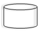 | Area = (π / 4) _ ( L _ W ) where L = base major axis length and W = base minor axis width. If only the surface area is known then one can use the Functional storage option instead. |
Conical
The storage unit is shaped as a truncated elliptical cone. The equation for surface area is:
| Area = π _ ( L _ W / 4 + W _ Z _ |
| Depth + (W / L) _ (Z _ Depth)^2 ) where L = base major axis length, W = base minor axis width and Z = side slope (run / rise) of a vertical slice through the major axis. |
Parabolic
The storage unit has the shape of an elliptical paraboloid. The equation for surface area is:
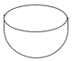 | Area = (π / 4) _ ( L _ W / H) * Depth where L = major axis length at height H and W = minor axis width at height H. This shape can also be described using the Functional storage option. |
Pyramidal
This is for storage units shaped as a truncated rectangular pyramid or a rectangular box. The equation for surface area is:
| Area = L _ W + 2 _ (L + W) _ Z _ Depth +(2 _ Z _ Depth)^2 where L = base length, W = base width and Z = side slope (run / rise) (which would be 0 for a box). |
Functional
The following general function is used to relate surface area to depth:
Area = a0 + a1 * Depth ^a2
where a0, a1, and a2 are user supplied coefficients. Here are coefficient values for some particular shapes:
- Shapes with vertical sides (such as a cylinder or rectangular prism):
a0 = area of the base
a1 = a2 = 0
- Open channel with a trapezoidal cross section and vertical ends:
a0 = W * L
a1 = 2 _ Z _ L
a2 = 1
where W = bottom width of cross section, L = channel length, and Z = side slope.
- Open channel with a parabolic cross section and vertical ends:
a0 = 0
a1 = W _ L _ H^0.5
a2 = 1
where W = top width, L = channel length and H = full height.
- Elliptical paraboloid:
a0 = 0
a1 = π _ L _ W / H
a2 = 1
where L is the length of the major axis and W the length of the minor axis at full height H.
- Circular non-truncated cone:
a0 = 0
a1 = (π/4) * (W / H)^2
a2 = 2
where W is the cone's diameter at height H.
Tabular
This method uses a tabular Storage Curve to relate surface area to depth. It can represent natural depressions with irregular shaped contour intervals, spheroid storage vessels or conventional shapes with different base sizes stacked on top of one another. The first point supplied to the curve should be the surface area of the unit's base at a depth of 0. Otherwise it will be assumed that the unit has zero surface area at its base. The curve will be extrapolated outwards to meet the unit's maximum depth if need be.
For each of these methods, depth is measured in feet and surface area in square feet for US units, while meters and square meters, respectively, are used for SI units.
Clicking the Show Volume Calculator label will display a panel where one can see what the surface area and stored volume will be at a specified water depth in the selected storage shape.
Street Section Editor
The Street Section Editor is used to define the dimensions of a street or roadway cross-section. It is invoked when a new Street object is created or is selected for editing from the Project Browser , or when a STREET shape is chosen from the Cross-Section Editor. The editor asks that the following dimensions be provided for the portion of the street extending from the high point of the roadway to the curb and beyond to any backing that might exist (see figure below):
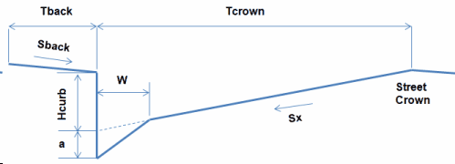
Street Section Name
The name assigned to the street cross section. Conduits with a STREET shape cross section will refer to this name to identify its cross section dimensions.
Road Width (Tcrown)
The distance from the curb to the high point of the street roadway (i.e., the street crown) (feet or meters). Traffic lanes are typically 10 to 12 feet (3.3 to 3.7 meters) wide with gutters being 1 to 3 feet (0.3 to 1 meter) wide.
Curb Height (Hcurb)
The height of the curb with respect to the street's cross slope (feet or meters). Typical heights are 4 to 8 inches with 6 inches (0.5 feet or 0.15 meters) being standard in the U.S..
Cross Slope (Sx)
The slope of the roadway portion of the cross section (percent). Cross slopes range between 1 to 4 percent with 2 percent being the most common value.
Street Roughness
Manning's roughness coefficient (n) for the street surface. Typical values range from 0.013 to 0.017.
One or Two Sided
Select One Sided if the street section extends only to the street crown or Two Sided if the same street section shape exists on the opposite side of the street crown.
Gutter Depression (a)
The distance that the gutter portion of the street is depressed below where the cross slope of the roadway would intersect the curb (inches or millimeters). Depressed gutter sections increase the conveyance capacity of a street. A typical value would be 2 inches (0.17 ft or 0.05 m). Conventional gutters maintain the same slope as the roadway and would therefore have a 0 depression depth.
Gutter Width (W)
The width between the curb and the roadway for a depressed gutter (feet or meters). A typical value would be 2 feet (0.6 meters). For conventional gutters with no depression depth use a value of 0.
Backing Width (Tback)
The width of the area that the street backs up against (such as a sidewalk or lawn area) (feet or meters). Enter 0 if there is no backing.
Backing Slope (Sback)
The slope of the backing area (percent). If the backing width is non-zero then this must be a positive number. Otherwise it is ignored.
Backing Roughness
Manning's roughness coefficient (n) for the backing's surface. This parameter is ignored if the backing width is 0.
Table by Object Dialog
The Table by Object dialog is used when creating a time series table of several variables for a single object. Use the dialog as follows:
- Select a Start Date and End Date for the table (the default is the entire simulation period).
- Choose whether to show time as Elapsed Time or as Date/Time values.
- Choose an Object Category (Subcatchment, Node, Link, or System).
- Identify a specific object in the category by clicking the object either on the Study Area Map or in the Project Browser and then clicking the button on the dialog. Only a single object can be selected for this type of table.
- Check off the variables to be tabulated for the selected object. The available choices depend on the category of object selected.
- Click the OK button to create the table.
Table by Variable Dialog
The Table by Variable dialog is used when creating a time series table of a single variable for one or more objects. Use the dialog as follows:
- Select a Start Date and End Date for the table (the default is the entire simulation period).
- Choose whether to show time as Elapsed Time or as Date/Time values.
- Choose an Object Category (Subcatchment, Node or Link).
- Select a simulated variable to be tabulated. The available choices depend on the category of object selected.
- Identify one or more objects in the category by successively clicking the object either on the Study Area Map or in the Project Browser and then clicking the button on the dialog.
- Click the OK button to create the table.
A maximum of 6 objects can be selected for a single table. Objects already selected can be deleted, moved up in the order or moved down in the order by clicking the , , and buttons, respectively.
Time Pattern Editor
The Time Pattern Editor is invoked whenever a new [Time Pattern]() object is created or an existing time pattern is selected for editing. The editor contains the following data entry fields:
Name
Enter the name assigned to the time pattern.
Type
Select the type of time pattern being specified. The choices are Monthly, Daily, Hourly and Weekend Hourly.
Description
Provide an optional comment or description for the time pattern. If more than one line is needed, click the [edit] button to launch a multi-line comment editor.
Multipliers
Enter a value for each multiplier. The number and meaning of the multipliers changes with the type of time pattern selected:
| MONTHLY | One multiplier for each month of the year |
| DAILY | One multiplier for each day of the week |
| HOURLY | One multiplier for each hour from 12 midnight to 11 PM |
| WEEKEND | Same as for HOURLY except applied for weekend days |
[!tip] In order to maintain an average dry weather flow or pollutant concentration at its specified value (as entered on the Inflows Editor), the multipliers for a pattern should average to 1.0.
Time Series Editor
The Time Series Editor is invoked whenever a new Time Series object is created or an existing time series is selected for editing. To use the Time Series Editor:
- Enter values for the following standard items:
| Name | Name of the time series. |
| Description | Optional comment or description of what the time series represents.Click the button to launch a multi-line comment editor if more than one line is needed. |
- Select whether to use an external file as the source of the data or to enter the data directly into the form's data entry grid.
- If the external file option is selected, click the button to locate the file's name. The file's contents must be formatted in the same manner as the direct data entry option discussed below. See the description of Time Series Files for details.
- For direct data entry, enter values in the data entry grid as follows:
| Date Column | Optional date (in month/day/year format) of the time series values (only needed at points in time where a new date occurs). |
| Time Column | If dates are used, enter the military time of day for each time series value (as hours:minutes or decimal hours). If dates are not used, enter time as hours since the start of the simulation. |
| Value Column | Time series numerical values. |
A graphical plot of the data in the grid can be viewed in a separate window by clicking the View button. Right clicking over the grid will make a popup Edit menu appear. It contains commands to cut, copy, insert, and paste selected cells in the grid as well as options to insert or delete a row.
- Press OK to accept the time series or Cancel to cancel your edits.
[!tip] Note that there are two methods for describing the occurrence time of time series data:
- as calendar date/time of day (which requires that at least one date, at the start of the series, be entered in the Date column)
- as elapsed hours since the start of the simulation (where the Date column remains empty).
[!tip] For rainfall time series, it is only necessary to enter periods with non-zero rainfall amounts. SWMM interprets the rainfall value as a constant value lasting over the recording interval specified for the rain gage which utilizes the time series. For all other types of time series, SWMM uses interpolation to estimate values at times that fall in between the recorded values.
Time Series Plot Selection Dialog
The Time Series Plot Selection dialog specifies a set of objects and their variables whose computed time series will be graphed in a Time Series Plot. The dialog is used as follows:
- Select a Start Date and End Date for the plot (the default is the entire simulation period).
- Choose whether to show time as Elapsed Time or as Date/Time values.
- Add up to six different data series to the plot by clicking the Add button above the data series list box.
- Use the Edit button to make changes to a selected data series or the Delete button to delete a data series.
- Use the Up and Down buttons to change the order in which the data series will be plotted.
- Click the OK button to create the plot.
When you click the Add or Edit buttons a Data Series Selection dialog will be displayed for selecting a particular object and variable to plot.
Data Series Selection Dialog
The Data Series Selection dialog is launched by the Time Series Plot Selection dialog to select a data series for plotting in a Time Series Plot. It contains the following data fields:
| Object Type | the type of object to plot (Subcatchment, Node, Link or System). |
| Object Name | the ID name of the object to be plotted. (This field is disabled for System variables). |
| Variable | the variable whose time series will be plotted (choices vary by object type). |
| Legend Label | the text to use in the legend for the data series. If left blank, a default label made up of the object type, name, variable and units will be used (e.g. Link C16 Flow (CFS)). |
| Axis | whether to use the left or right vertical axis to plot the data series. |
[!tip] As you select objects on the Study Area Map or in the Project Browser their types and ID names will automatically appear in this dialog.
Click the Accept button to add/update the data series into the plot or click the Cancel button to disregard your edits. You will then be returned to the Time Series Plot Selection dialog where you can add or edit another data series.
[!tip] To make a precipitation time series display in inverted fashion on a plot, assign it to the right axis and after the plot is displayed, use the Graph Options Dialog to invert the right axis and expand the scales of both the left and right axes (so it doesn't overlap another data series).
Tool Properties Dialog
The Tool Properties dialog is used to describe the properties of an add-in tool that has been added to the Tools menu of SWMM's Main Menu bar. It contains the following data entry fields:
Tool Name
This is the name to be used for the tool when it is displayed in the Tools Menu.
Program
Enter the full path name to the program that will be launched when the tool is selected. You can click the button to bring up a standard Windows file selection dialog from which you can search for the tool's executable file name.
Working Directory
This field contains the name of the directory that will be used as the working directory when the tool is launched. You can click the button to bring up a standard directory selection dialog from which you can search for the desired directory. You can also enter the macro symbol $PROJDIR to utilize the current SWMM project's directory or $SWMMDIR to use the directory where the SWMM 5 executable resides. Either of these macros can also be inserted into the Working Directory field by selecting its name in the list of macros provided on the dialog and then clicking the button. This field can be left blank, in which case the system's current directory will be used.
Parameters
This field contains the list of command line arguments that the tool's executable program expects to see when it is launched. Multiple parameters can be entered field as long as they are separated by spaces. A number of special macro symbols have been pre-defined, as listed in the Macros list box of the dialog, to simplify the process of listing the command line parameters. When one of these macro symbols is inserted into the list of parameters, it will be expanded to its true value when the tool is launched. A specific macro symbol can either be typed into the Parameters field or be selected from the Macros list (by clicking on it) and then added to the parameter list by clicking the button.
Disable SWMM while executing
Check this option if SWMM should be minimized and disabled while the tool is executing. Normally you will need to employ this option if the tool produces a modified input file or output file, such as when the $INPFILE or $OUTFILE macros are used as command line parameters. When this option is enabled, SWMM's main window will be minimized and will not respond to user input until the tool is terminated.
Update SWMM after closing
Check this option if SWMM should be updated after the tool finishes executing. This option can only be selected if the option to disable SWMM while the tool is executing was first selected. Updating can occur in two ways. If the $INPFILE macro was used as a command line parameter for the tool and the corresponding temporary input file produced by SWMM was updated, then the current project's data will be replaced with the data contained in the updated temporary input file. If the $OUTFILE macro was used as a command line parameter, and its corresponding file is found to contain a valid set of output results after the tool closes, then the contents of this file will be used to display simulation results within the SWMM workspace.
Generally speaking, the suppliers of third-party tools will provide instructions on what settings should be used in the Tool Properties dialog to properly register their tool with SWMM.
Special Macro Symbols
| $PROJDIR | The directory where the current SWMM project file resides. |
| $SWMMDIR | The directory where the SWMM 5 executable is installed. |
| $INPFILE | The name of a temporary file containing the current project's data that is created just before the tool is launched. |
| $RPTFILE | The name of a temporary file that is created just before the tool is launched and can be displayed after the tool closes by using the Report >> Status command from the main SWMM menu. |
| $OUTFILE | The name of a temporary file to which the tool can write simulation results in the same format used by SWMM 5, which can then be displayed after the tool closes in the same fashion as if a SWMM run were made. |
| $RIFFILE | The name of the Runoff Interface File, as specified in the Interface Files page of the Simulation Options dialog, to which runoff simulation results were saved from a previous SWMM run. |
Transect Editor
The Transect Editor is invoked whenever a new Transect object is created or an existing Transect is selected for editing. It contains the following data entry fields:
Name
The name assigned to the transect.
Description
An optional comment or description of the transect.
Station/Elevation Data Grid
Values of distance from the left side of the channel along with the corresponding elevation of the channel bottom as one moves across the channel from left to right, looking in the downstream direction. The elevations can be relative to any reference point, such as the bottom of the channel, and not necessarily mean sea level. Up to 1500 data values can be entered.
Roughness
Values of Manning's roughness coeffcient (n)for the left overbank, right overbank, and main channel portion of the transect. The overbank roughness values can be zero if no overbank exists.
Bank Stations
The distance values appearing in the Station/Elevation grid that mark the end of the left overbank and the start of the right overbank. Use 0 to denote the absence of an overbank.
Modifiers
- The Stations modifier is a factor by which the distance between each station will be multiplied when the transect data is processed by SWMM. Use a value of 0 if no such factor is needed.
- The Elevations modifier is a constant value that will be added to each elevation value.
- The Meander modifier is the ratio of the length of a meandering main channel to the length of the overbank area that surrounds it. This modifier is applied to all conduits that use this particular transect for their cross section. It assumes that the length supplied for these conduits is that of the longer main channel. SWMM will use the shorter overbank length in its calculations while increasing the main channel roughness to account for its longer length. The modifier is ignored if it is left blank or set to 0.
Right-clicking over the Data Grid will make a popup Edit menu appear. It contains commands to cut, copy, insert, and paste selected cells in the grid as well as options to insert or delete a row.
Clicking the View button will bring up a window that illustrates the shape of the transect cross section.
Treatment Editor
The Treatment Editor is invoked whenever the Treatment property of a node is selected from the Property Editor. It displays a list of the project's pollutants with an edit box next to each as shown below.
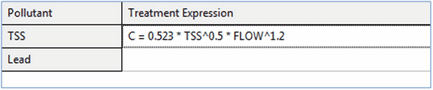
Enter a valid treatment expression in the box next to each pollutant which receives treatment. Click the OK button to accept your edits or click Cancel to ignore them.
Any of the following math functions (which are case insensitive) can be used in a treatment expression:
- abs(x) for absolute value of x
- sgn(x) which is +1 for x >= 0 or -1 otherwise
- step(x) which is 0 for x <= 0 and 1 otherwise
- sqrt(x) for the square root of x
- log(x) for logarithm base e of x
- log10(x) for logarithm base 10 of x
- exp(x) for e raised to the x power
- the standard trig functions (sin, cos, tan, and cot)
- the inverse trig functions (asin, acos, atan, and acot)
- the hyperbolic trig functions (sinh, cosh, tanh, and coth)
along with the standard operators +, -, *, /, ^ (for exponentiation ) and any level of nested parentheses.
Unit Hydrograph Editor
The Unit Hydrograph Editor is invoked whenever a new [Unit Hydrograph]() object is created or an existing one is selected for editing. It is used to specify the shape parameters and rain gage for a group of triangular unit hydrographs. These hydrographs are used to compute rainfall-derived inflow/infiltration (RDII) flow at selected nodes of the drainage system.
A UH group can contain up to 12 sets of unit hydrographs (one for each month of the year), and each set can consist of up to 3 individual hydrographs (for short-term, intermediate-term, and long-term responses, respectively) as well as parameters that describe any initial abstraction losses. The editor, shown below, contains the following data entry fields:
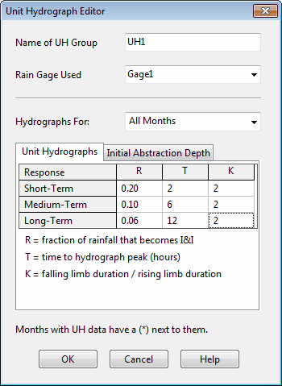
Name of UH Group
Enter the name assigned to the UH Group.
Rain Gage Used
Type in (or select from the dropdown list) the name of the rain gage that supplies rainfall data to the unit hydrographs in the group.
Hydrographs For:
Select a month from the dropdown list box for which hydrograph parameters will be defined. Select All Months to specify a default set of hydrographs that apply to all months of the year. Then select specific months that need to have special hydrographs defined. Months listed with a (*) next to them have had hydrographs assigned to them.
Unit Hydrographs
Select this tab to provide the R-T-K shape parameters for each set of unit hydrographs in selected months of the year. The first row is used to specify parameters for a short-term response hydrograph (i.e., small value of T), the second for a medium-term response hydrograph, and the third for a long-term response hydrograph (largest value of T). It is not required that all three hydrographs be defined and the sum of the three R-values do not have to equal 1. The shape parameters for each UH consist of:
- R: the fraction of rainfall volume that enters the sewer system
- T: the time from the onset of rainfall to the peak of the UH in hours
- K: the ratio of time to recession of the UH to the time to peak
Initial Abstraction Depth
Select this tab to provide parameters that describe how rainfall will be reduced by any initial abstraction depth available (i.e., interception and depression storage) before it is processed through the unit hydrographs defined for a specific month of the year. Different initial abstraction parameters can be assigned to each of the three unit hydrograph responses. These parameters are:
- Dmax: the maximum depth of initial abstraction available (in rain depth units)
- Drec: the rate at which any utilized initial abstraction is made available again (in rain depth units per day)
- Do: the amount of initial abstraction that has already been utilized at the start of the simulation (in rain depth units).
If a grid cell is left empty its corresponding parameter value is assumed to be 0. Right-clicking over a data entry grid will make a popup Edit menu appear. It contains commands to cut, copy, and paste text to or from selected cells in the grid.
Error Messages
| Category | Numbers |
|---|---|
| Run Time Errors | 101 - 107 |
| Property Errors | 108 - 195 |
| Format Errors | 200 - 233 |
| File Errors | 301 - 357 |
| Warnings | 01 - 11 |
Run Time Errors
ERROR 101: memory allocation error.
- There is not enough physical memory in the computer to analyze the study area.
ERROR 103: cannot solve KW equations for Link xxx.
- The internal solver for Kinematic Wave routing failed to converge for the specified link at some stage of the simulation.
ERROR 105: cannot open ODE solver.
- The system could not open its Ordinary Differential Equation solver.
ERROR 107: cannot compute a valid time step.
- A valid time step for runoff or flow routing calculations (i.e., a number greater than 0) could not be computed at some stage of the simulation.
Property Errors
ERROR 108: ambiguous outlet ID name for Subcatchment xxx.
- The name of the element identified as the outlet of a subcatchment belongs to both a node and a subcatchment in the project's data base.
ERROR 109: invalid parameter values for Aquifer xxx.
- The properties entered for an aquifer object were either invalid numbers or were inconsistent with one another (e.g., the soil field capacity was higher than the porosity).
ERROR 110: ground elevation is below water table for Subcatchment xxx.
- The ground elevation assigned to a subcatchment's groundwater parameters cannot be below the initial water table elevation of the aquifer object used by the subcatchment.
ERROR 111: invalid length for Conduit xxx.
- Conduits cannot have zero or negative lengths.
ERROR 112: elevation drop exceeds length for Conduit xxx.
- The elevation drop across the ends of a conduit cannot be greater than the conduit's length. Check for errors in the length and in both the invert elevations and offsets at the conduit's upstream and downstream nodes.
ERROR 113: invalid roughness for Conduit xxx.
- Conduits cannot have zero or negative roughness values.
ERROR 114: invalid number of barrels for Conduit xxx.
- Conduits must consist of one or more barrels.
ERROR 115: adverse slope for Conduit xxx.
- Under Steady or Kinematic Wave routing, all conduits must have positive slopes. This can usually be corrected by reversing the inlet and outlet nodes of the conduit (i.e., right click on the conduit and select Reverse from the popup menu that appears). Adverse slopes are permitted under Dynamic Wave routing.
ERROR 117: no cross section defined for Link xxx.
- A cross section geometry was never defined for the specified link.
ERROR 119: invalid cross section for Link xxx.
- Either an invalid shape or invalid set of dimensions was specified for a link's cross section.
ERROR 121: missing or invalid pump curve assigned to Pump xxx.
- Either no pump curve or an invalid type of curve was specified for a pump.
ERROR 122: startup depth not higher than shutoff depth for Pump xxx.
- Automatic startup for a pump always occurs at a wet well water level that is higher than its automatic shutoff level.
ERROR 131: the following links form cyclic loops in the drainage system.
- The Steady and Kinematic Wave flow routing methods cannot be applied to systems where a cyclic loop exists (i.e., a directed path along a set of links that begins and ends at the same node). Most often the cyclic nature of the loop can be eliminated by reversing the direction of one of its links (i.e., switching the inlet and outlet nodes of the link). The names of the links that form the loop will be listed following this message.
ERROR 133: Node xxx has more than one outlet link.
- Under Steady and Kinematic Wave flow routing, a junction node can have only a single outlet link.
ERROR 134: Node xxx has illegal DUMMY link connections.
- Only a single conduit with a DUMMY cross-section or Ideal-type pump can be directed out of a node; a node with an outgoing Dummy conduit or Ideal pump cannot have all of its incoming links be Dummy conduits and Ideal pumps; a Dummy conduit cannot have its upstream end connected to a storage node.
ERROR 135: Divider xxx does not have two outlet links.
- Flow divider nodes must have two outlet links connected to them.
ERROR 136: Divider xxx has invalid diversion link.
- The link specified as being the one carrying the diverted flow from a flow divider node was defined with a different inlet node.
ERROR 137: Weir Divider xxx has invalid parameters.
- The parameters of a Weir-type divider node either are non-positive numbers or are inconsistent (i.e., the value of the discharge coefficient times the weir height raised to the 3/2 power must be greater than the minimum flow parameter).
ERROR 138: Node xxx has initial depth greater than maximum depth.
- Self-explanatory.
ERROR 139: Regulator xxx is the outlet of a non-storage node.
- Under Steady or Kinematic Wave flow routing, orifices, weirs, and outlet links can only be used as outflow links from storage nodes.
ERROR 140: Storage node xxx has negative volume at full depth.
- The storage unit's Shape data (surface area v. depth) is producing a negative volume at full depth. This can occur when a storage node's surface area curve slopes downward at its highest depth which is below the node's full depth.
Format Errors
ERROR 200: one or more errors in input file.
- This message appears when one or more input file parsing errors (the 200-series errors) occur.
ERROR 201: too many characters in input line.
- A line in the input file cannot exceed 1024 characters.
ERROR 203: too few items at line n of input file.
- Not enough data items were supplied on a line of the input file.
ERROR 205: invalid keyword at line n of input file.
- An unrecognized keyword was encountered when parsing a line of the input file.
ERROR 207: duplicate ID name at line n of input file.
- An ID name used for an object was already assigned to an object of the same category.
ERROR 209: undefined object xxx at line n of input file.
- A reference was made to an object that was never defined. An example would be if node 123 were designated as the outlet point of a subcatchment, yet no such node was ever defined in the study area.
ERROR 211: invalid number xxx at line n of input file.
- Either a string value was encountered where a numerical value was expected or an invalid number (e.g., a negative value) was supplied.
ERROR 213: invalid date/time xxx at line n of input file.
- An invalid format for a date or time was encountered. Dates must be entered as month/day/year and times as either decimal hours or as hour:minute:second.
ERROR 217: control rule clause out of sequence at line n of input file.
- Errors of this nature can occur when the format for writing control rules is not followed correctly (see Control Rule Format).
ERROR 219: data provided for unidentified transect at line n of input file.
- A GR line with Station-Elevation data was encountered in the [TRANSECTS] section of the input file after an NC line but before any X1 line that contains the transect's ID name.
ERROR 221: transect station out of sequence at line n of input file.
- The station distances specified for the transect of an irregular cross section must be in increasing numerical order starting from the left bank.
ERROR 223: Transect xxx has too few stations.
- A transect for an irregular cross section must have at least 2 stations defined for it.
ERROR 225: Transect xxx has too many stations.
- A transect cannot have more than 1500 stations defined for it.
ERROR 227: Transect xxx has no Manning's N.
- No Manning's N was specified for a transect (i.e., there was no NC line in the [TRANSECTS] section of the input file.
ERROR 229: Transect xxx has invalid overbank locations.
- The distance values specified for either the left or right overbank locations of a transect do not match any of the distances listed for the transect's stations.
ERROR 231: Transect xxx has no depth.
- All of the stations for a transect were assigned the same elevation.
ERROR 233: invalid math expression at line n of input file.
- A math expression used for a treatment function, a groundwater flow function or a control rule condition clause is either not correctly formed or contains undefined variables or math functions.
ERROR 235: invalid infiltration parameters.
- Examples are a Horton maximum infiltration rate lower than the minimum rate or a Green-Ampt initial moisture deficit greater than 1.
File Errors
ERROR 301: files share same names.
- The input, report, and binary output files specified on the command line cannot have the same names.
ERROR 303: cannot open input file.
- The input file either does not exist or cannot be opened (e.g., it might be in use by another program).
ERROR 305: cannot open report file.
- The report file cannot be opened (e.g., it might reside in a directory to which the user does not have write privileges).
ERROR 307: cannot open binary results file.
- The binary output file cannot be opened (e.g., it might reside in a directory to which the user does not have write privileges).
ERROR 309: error writing to binary results file.
- There was an error in trying to write results to the binary output file (e.g., the disk might be full or the file size exceed the limit imposed by the operating system).
ERROR 311: error reading from binary results file.
- The command line version of SWMM could not read results saved to the binary output file when writing results to the report file.
ERROR 313: cannot open scratch rainfall interface file.
- SWMM could not open the temporary file it uses to collate data together from external rainfall files.
ERROR 315: cannot open rainfall interface file xxx.
- SWMM could not open the specified rainfall interface file, possibly because it does not exist or because the user does not have write privileges to its directory.
ERROR 317: cannot open rainfall data file xxx.
- An external rainfall data file could not be opened, most likely because it does not exist.
ERROR 318: date out of sequence in rainfall data file xxx.
- An external user-prepared rainfall data file must have its entries appear in chronological order. The first out-of-order entry will be listed.
ERROR 319: unknown format for rainfall data file.
- SWMM could not recognize the format used for a designated rainfall data file.
ERROR 320: invalid format for rainfall interface file.
- SWMM was trying to read data from a designated rainfall interface file with the wrong format (i.e., it may have been created for some other project or actually be some other type of file).
ERROR 321: no data in rainfall interface file for gage xxx.
- This message occurs when a project wants to use a previously saved rainfall interface file, but cannot find any data for one of its rain gages in the interface file. It can also occur if the gage uses data from a user-prepared rainfall file and the station id entered for the gage cannot be found in the file.
ERROR 323: cannot open runoff interface file xxx.
- A runoff interface file could not be opened, possibly because it does not exist or because the user does not have write privileges to its directory.
ERROR 325: incompatible data found in runoff interface file.
- SWMM was trying to read data from a designated runoff interface file with the wrong format (i.e., it may have been created for some other project or actually be some other type of file).
ERROR 327: attempting to read beyond end of runoff interface file.
- This error can occur when a previously saved runoff interface file is being used in a simulation with a longer duration than the one that created the interface file.
ERROR 329: error in reading from runoff interface file.
- A format error was encountered while trying to read data from a previously saved runoff interface file.
ERROR 331: cannot open hot start interface file xxx.
- A hotstart interface file could not be opened, possibly because it does not exist or because the user does not have write privileges to its directory.
ERROR 333: incompatible data found in hot start interface file.
- SWMM was trying to read data from a designated hot start interface file with the wrong format (i.e., it may have been created for some other project or actually be some other type of file).
ERROR 335: error in reading from hot start interface file.
- A format error was encountered while trying to read data from a previously saved hot start interface file.
ERROR 336: no climate file specified for evaporation and/or wind speed.
- This error occurs when the user specifies that evaporation or wind speed data will be read from an external climate file, but no name is supplied for the file.
ERROR 337: cannot open climate file xxx.
- An external climate data file could not be opened, most likely because it does not exist.
ERROR 338: error in reading from climate file xxx.
- SWMM was trying to read data from an external climate file with the wrong format.
ERROR 339: attempt to read beyond end of climate file xxx.
- The specified external climate does not include data for the period of time being simulated.
ERROR 341: cannot open scratch RDII interface file.
- SWMM could not open the temporary file it uses to store RDII flow data.
ERROR 343: cannot open RDII interface file xxx.
- An RDII interface file could not be opened, possibly because it does not exist or because the user does not have write privileges to its directory.
ERROR 345: invalid format for RDII interface file.
- SWMM was trying to read data from a designated RDII interface file with the wrong format (i.e., it may have been created for some other project or actually be some other type of file).
ERROR 351: cannot open routing interface file xxx.
- A routing interface file could not be opened, possibly because it does not exist or because the user does not have write privileges to its directory.
ERROR 353: invalid format for routing interface file xxx.
- SWMM was trying to read data from a designated routing interface file with the wrong format (i.e., it may have been created for some other project or actually be some other type of file).
ERROR 355: mismatched names in routing interface file xxx.
- The names of pollutants found in a designated routing interface file do not match the names used in the current project.
ERROR 357: inflows and outflows interface files have same name.
-In cases where a run uses one routing interface file to provide inflows for a set of locations and another to save outflow results, the two files cannot both have the same name.
** ERROR 361: could not open external file used for Time Series xxx.
- The external file used to provide data for the named time series could not be opened, most likely because it does not exist.
ERROR 363: invalid data in external file used for used for Time Series xxx.
- The external file used to provide data for the named time series has one or more lines with the wrong format.
Warning Messages
WARNING 01: wet weather time step reduced to recording interval for Rain Gage xxx.
- The wet weather time step was automatically reduced so that no period with rainfall would be skipped during a simulation.
WARNING 02: maximum depth increased for Node xxx.
- The maximum depth for the node was automatically increased to match the top of the highest connecting conduit.
WARNING 03: negative offset ignored for Link xxx.
- The link's stipulated offset was below the connecting node's invert so its actual offset was set to 0.
WARNING 04: minimum elevation drop used for Conduit xxx.
- The elevation drop between the end nodes of the conduit was below 0.001 ft (0.00035 m) so the latter value was used instead to calculate its slope.
WARNING 05: minimum slope used for Conduit xxx.
- The conduit's computed slope was below the user-specified Minimum Conduit Slope so the latter value was used instead.
WARNING 06: dry weather time step increased to wet weather time step.
- The user-specified time step for computing runoff during dry weather periods was lower than that set for wet weather periods and was automatically increased to the wet weather value.
WARNING 07: routing time step reduced to wet weather time step.
- The user-specified time step for flow routing was larger than the wet weather runoff time step and was automatically reduced to the runoff time step to prevent loss of accuracy.
WARNING 08: elevation drop exceeds length for Conduit xxx.
- The elevation drop across the ends of a conduit exceeds its length. The program computes the conduit's slope as the elevation drop divided by the length instead of using the more accurate right triangle method. The user should check for errors in the length and in both the invert elevations and offsets at the conduit's upstream and downstream nodes.
WARNING 09: time series interval greater than recording interval for Rain Gage xxx.
- The smallest time interval between entries in the precipitation time series used by the rain gage is greater than the recording time interval specified for the gage. If this was not actually intended then what appear to be continuous periods of rainfall in the time series will instead be read with time gaps in between them.
WARNING 10a: crest elevation is below downstream invert for regulator Link xxx.
- For Kinematic Wave or Steady Flow routing, the height of the opening on an orifice, weir, or outlet at a storage node is below the invert elevation of its downstream node. Users should check to see if the regulator's offset height or the downstream node's invert elevation is in error.
WARNING 10b: crest elevation raised to downstream invert for regulator Link xxx.
- For Dynamic Wave routing, the height of the opening on an orifice, weir or outlet will be raised to the invert elevation of its downstream node if necessary.
WARNING 11: non-matching attributes in Control Rule xxx.
- A control rule's premise is comparing two different types of attributes to one another (for example, conduit flow and junction water depth).